ABL_BaseEditor_Analyses
Haider Inam
2023-03-13
Last updated: 2023-04-10
Checks: 6 1
Knit directory: duplex_sequencing_screen/
This reproducible R Markdown analysis was created with workflowr (version 1.6.2). The Checks tab describes the reproducibility checks that were applied when the results were created. The Past versions tab lists the development history.
The R Markdown file has unstaged changes. To know which version of
the R Markdown file created these results, you’ll want to first commit
it to the Git repo. If you’re still working on the analysis, you can
ignore this warning. When you’re finished, you can run
wflow_publish to commit the R Markdown file and build the
HTML.
Great job! The global environment was empty. Objects defined in the global environment can affect the analysis in your R Markdown file in unknown ways. For reproduciblity it’s best to always run the code in an empty environment.
The command set.seed(20200402) was run prior to running
the code in the R Markdown file. Setting a seed ensures that any results
that rely on randomness, e.g. subsampling or permutations, are
reproducible.
Great job! Recording the operating system, R version, and package versions is critical for reproducibility.
Nice! There were no cached chunks for this analysis, so you can be confident that you successfully produced the results during this run.
Great job! Using relative paths to the files within your workflowr project makes it easier to run your code on other machines.
Great! You are using Git for version control. Tracking code development and connecting the code version to the results is critical for reproducibility.
The results in this page were generated with repository version 60b906b. See the Past versions tab to see a history of the changes made to the R Markdown and HTML files.
Note that you need to be careful to ensure that all relevant files for
the analysis have been committed to Git prior to generating the results
(you can use wflow_publish or
wflow_git_commit). workflowr only checks the R Markdown
file, but you know if there are other scripts or data files that it
depends on. Below is the status of the Git repository when the results
were generated:
Ignored files:
Ignored: .Rhistory
Ignored: .Rproj.user/
Ignored: data/Consensus_Data/.Rhistory
Ignored: data/Consensus_Data/Novogene_lane11/sample1/duplex/duplex_sorted_filtered.tsv.gz
Ignored: data/Consensus_Data/Novogene_lane11/sample1/sscs/sscs_sorted_filtered.tsv.gz
Ignored: data/Consensus_Data/Novogene_lane11/sample2/archive/sscs_aligned_filtered.tsv.gz
Ignored: data/Consensus_Data/Novogene_lane11/sample2/duplex/duplex_sorted_filtered.tsv.gz
Ignored: data/Consensus_Data/Novogene_lane11/sample2/sscs/sscs_sorted_filtered.tsv.gz
Ignored: data/Consensus_Data/Novogene_lane11/sample3/duplex/duplex_sorted_filtered.tsv.gz
Ignored: data/Consensus_Data/Novogene_lane11/sample3/sscs/sscs_sorted_filtered.tsv.gz
Ignored: data/Consensus_Data/Novogene_lane11/sample4/duplex/duplex_sorted_filtered.tsv.gz
Ignored: data/Consensus_Data/Novogene_lane11/sample4/sscs/sscs_sorted_filtered.tsv.gz
Ignored: data/Consensus_Data/Novogene_lane11/sample5/variant_caller_outputs/sscs_L858R_aligned_filtered.tsv.gz
Ignored: data/Consensus_Data/Novogene_lane11/sample5/variant_caller_outputs/sscs_L858R_aligned_filtered_sample5.tsv.gz
Ignored: data/Consensus_Data/Novogene_lane11/sample6/archive/sscs_aligned_filtered.tsv.gz
Ignored: data/Consensus_Data/Novogene_lane11/sample6/sscs_L858R_aligned_filtered.tsv.gz
Ignored: data/Consensus_Data/Novogene_lane11/sample6/variant_caller_outputs/variants_ann_sample6.csv.gz
Ignored: data/Consensus_Data/Novogene_lane11/sample7/sscs/sscs_sorted_filtered.tsv.gz
Ignored: data/Consensus_Data/Novogene_lane12/sample1/low_sscscounts/sscs_aligned_filtered.tsv.gz
Ignored: data/Consensus_Data/Novogene_lane12/sample1/sscs_aligned_filtered.tsv.gz
Ignored: data/Consensus_Data/Novogene_lane12/sample3/sscs_combined_filtered.tsv.gz
Ignored: data/Consensus_Data/Novogene_lane12/sample5/sscs_combined_filtered.tsv.gz
Ignored: data/Consensus_Data/Novogene_lane12/sample7/sscs_combined_filtered.tsv.gz
Ignored: data/Consensus_Data/Novogene_lane12/sample9/sscs_combined_filtered.tsv.gz
Ignored: data/Consensus_Data/Novogene_lane13/sample1/duplex/duplex_sorted_filtered.tsv.gz
Ignored: data/Consensus_Data/Novogene_lane13/sample1/sscs/sscs_sorted_filtered.tsv.gz
Ignored: data/Consensus_Data/Novogene_lane13/sample10/duplex/duplex_sorted_filtered.tsv.gz
Ignored: data/Consensus_Data/Novogene_lane13/sample10/sscs/sscs_sorted_filtered.tsv.gz
Ignored: data/Consensus_Data/Novogene_lane13/sample11/duplex/duplex_sorted_filtered.tsv.gz
Ignored: data/Consensus_Data/Novogene_lane13/sample11/sscs/sscs_sorted_filtered.tsv.gz
Ignored: data/Consensus_Data/Novogene_lane13/sample12/duplex/duplex_sorted_filtered.tsv.gz
Ignored: data/Consensus_Data/Novogene_lane13/sample12/sscs/sscs_sorted_filtered.tsv.gz
Ignored: data/Consensus_Data/Novogene_lane13/sample2/sscs_sorted_filtered.tsv.gz
Ignored: data/Consensus_Data/Novogene_lane13/sample3/sscs_sorted_filtered.tsv.gz
Ignored: data/Consensus_Data/Novogene_lane13/sample4/sscs_sorted_filtered.tsv.gz
Ignored: data/Consensus_Data/Novogene_lane13/sample5/sscs_sorted_filtered.tsv.gz
Ignored: data/Consensus_Data/Novogene_lane13/sample6/sscs_sorted_filtered.tsv.gz
Ignored: data/Consensus_Data/Novogene_lane13/sample7/duplex/duplex_sorted_filtered.tsv.gz
Ignored: data/Consensus_Data/Novogene_lane13/sample7/sscs/sscs_sorted_filtered.tsv.gz
Ignored: data/Consensus_Data/Novogene_lane13/sample8/sscs_sorted_filtered.tsv.gz
Ignored: data/Consensus_Data/Novogene_lane13/sample8/variant_caller_outputs/
Ignored: data/Consensus_Data/Novogene_lane13/sample9/duplex/duplex_sorted_filtered.tsv.gz
Ignored: data/Consensus_Data/Novogene_lane13/sample9/sscs/sscs_sorted_filtered.tsv.gz
Ignored: data/Consensus_Data/Novogene_lane14/sample10_combined/duplex/duplex_sorted_filtered.tsv.gz
Ignored: data/Consensus_Data/Novogene_lane14/sample10_combined/sscs/sscs_sorted_filtered.tsv.gz
Ignored: data/Consensus_Data/Novogene_lane14/sample10_combined/sscs/variant_caller_outputs/archive/variants_ann.csv.gz
Ignored: data/Consensus_Data/Novogene_lane14/sample11/duplex/duplex_sorted_filtered.tsv.gz
Ignored: data/Consensus_Data/Novogene_lane14/sample11/sscs/sscs_sorted_filtered.tsv.gz
Ignored: data/Consensus_Data/Novogene_lane14/sample11/sscs/variant_caller_outputs/archive/variants_ann.csv.gz
Ignored: data/Consensus_Data/Novogene_lane14/sample12/duplex/duplex_sorted_filtered.tsv.gz
Ignored: data/Consensus_Data/Novogene_lane14/sample12/sscs/sscs_sorted_filtered.tsv.gz
Ignored: data/Consensus_Data/Novogene_lane14/sample12/sscs/variant_caller_outputs/archive/variants_ann.csv.gz
Ignored: data/Consensus_Data/Novogene_lane14/sample13/
Ignored: data/Consensus_Data/Novogene_lane14/sample14_combined/duplex/duplex_sorted_filtered.tsv.gz
Ignored: data/Consensus_Data/Novogene_lane14/sample14_combined/sscs.filt_1.fa.gz
Ignored: data/Consensus_Data/Novogene_lane14/sample14_combined/sscs/sscs_sorted_filtered.tsv.gz
Ignored: data/Consensus_Data/Novogene_lane14/sample14_combined/sscs/variant_caller_outputs/archive/variants_ann.csv.gz
Ignored: data/Consensus_Data/Novogene_lane14/sample14b/
Ignored: data/Consensus_Data/Novogene_lane14/sample15/duplex/duplex_sorted_filtered.tsv.gz
Ignored: data/Consensus_Data/Novogene_lane14/sample15/sscs/sscs_sorted_filtered.tsv.gz
Ignored: data/Consensus_Data/Novogene_lane14/sample15/sscs/variant_caller_outputs/archive/variants_ann.csv.gz
Ignored: data/Consensus_Data/Novogene_lane14/sample16/duplex/duplex_sorted_filtered.tsv.gz
Ignored: data/Consensus_Data/Novogene_lane14/sample16/sscs/sscs_sorted_filtered.tsv.gz
Ignored: data/Consensus_Data/Novogene_lane14/sample16/sscs/variant_caller_outputs/archive/variants_ann.csv.gz
Ignored: data/Consensus_Data/Novogene_lane14/sample17/duplex/duplex_sorted_filtered.tsv.gz
Ignored: data/Consensus_Data/Novogene_lane14/sample17/sscs/sscs_sorted_filtered.tsv.gz
Ignored: data/Consensus_Data/Novogene_lane14/sample17/sscs/variant_caller_outputs/archive/variants_ann.csv.gz
Ignored: data/Consensus_Data/Novogene_lane14/sample18/duplex/duplex_sorted_filtered.tsv.gz
Ignored: data/Consensus_Data/Novogene_lane14/sample18/sscs/sscs_sorted_filtered.tsv.gz
Ignored: data/Consensus_Data/Novogene_lane14/sample18/sscs/variant_caller_outputs/archive/variants_ann.csv.gz
Ignored: data/Consensus_Data/Novogene_lane14/sample1_combined/
Ignored: data/Consensus_Data/Novogene_lane14/sample2_combined/sscs_sorted_filtered.tsv.gz
Ignored: data/Consensus_Data/Novogene_lane14/sample3/sscs_sorted_filtered.tsv.gz
Ignored: data/Consensus_Data/Novogene_lane14/sample4/sscs_sorted_filtered.tsv.gz
Ignored: data/Consensus_Data/Novogene_lane14/sample5/sscs_sorted_filtered.tsv.gz
Ignored: data/Consensus_Data/Novogene_lane14/sample6/sscs_sorted_filtered.tsv.gz
Ignored: data/Consensus_Data/Novogene_lane14/sample7/sscs_sorted_filtered.tsv.gz
Ignored: data/Consensus_Data/Novogene_lane14/sample7/variant_caller_outputs/duplex/
Ignored: data/Consensus_Data/Novogene_lane14/sample8/sscs_sorted_filtered.tsv.gz
Ignored: data/Consensus_Data/Novogene_lane14/sample8/variant_caller_outputs/
Ignored: data/Consensus_Data/Novogene_lane14/sample9/duplex/duplex_sorted_filtered.tsv.gz
Ignored: data/Consensus_Data/Novogene_lane14/sample9/sscs/sscs_sorted_filtered.tsv.gz
Ignored: data/Consensus_Data/Novogene_lane2/
Ignored: data/Consensus_Data/Novogene_lane3/
Ignored: data/Consensus_Data/Novogene_lane4/
Ignored: data/Consensus_Data/Novogene_lane5/
Ignored: data/Consensus_Data/Novogene_lane6/
Ignored: data/Consensus_Data/Novogene_lane7/
Ignored: data/Consensus_Data/Ranomics_Pooled/
Ignored: data/Consensus_Data/archive/
Ignored: data/Consensus_Data/novogene_lane15/sample_1/duplex/duplex_sorted_filtered.tsv.gz
Ignored: data/Consensus_Data/novogene_lane15/sample_1/firstrun(lowsequencing)/duplex/
Ignored: data/Consensus_Data/novogene_lane15/sample_1/firstrun(lowsequencing)/sscs/
Ignored: data/Consensus_Data/novogene_lane15/sample_1/sscs/sscs_sorted_filtered.tsv.gz
Ignored: data/Consensus_Data/novogene_lane15/sample_2/duplex/duplex_sorted_filtered.tsv.gz
Ignored: data/Consensus_Data/novogene_lane15/sample_2/firstrun(lowsequencing)/sscs/
Ignored: data/Consensus_Data/novogene_lane15/sample_2/sscs/sscs_sorted_filtered.tsv.gz
Ignored: data/Consensus_Data/novogene_lane15/sample_3/duplex/duplex_sorted_filtered.tsv.gz
Ignored: data/Consensus_Data/novogene_lane15/sample_3/firstrun(lowsequencing)/duplex/duplex_sorted_filtered.tsv.gz
Ignored: data/Consensus_Data/novogene_lane15/sample_3/firstrun(lowsequencing)/sscs/sscs_sorted_filtered.tsv.gz
Ignored: data/Consensus_Data/novogene_lane15/sample_3/ngs/Sample3_sorted_filtered.tsv.gz
Ignored: data/Consensus_Data/novogene_lane15/sample_3/ngs/sample3a(firsthalf)/Sample3_sorted_filtered.tsv.gz
Ignored: data/Consensus_Data/novogene_lane15/sample_3/ngs/variants_ann.csv.gz
Ignored: data/Consensus_Data/novogene_lane15/sample_3/sscs/sscs_sorted_filtered.tsv.gz
Ignored: data/Consensus_Data/novogene_lane15/sample_4/duplex/duplex_sorted_filtered.tsv.gz
Ignored: data/Consensus_Data/novogene_lane15/sample_4/firstrun(lowsequencing)/duplex/duplex_sorted_filtered.tsv.gz
Ignored: data/Consensus_Data/novogene_lane15/sample_4/firstrun(lowsequencing)/sscs/sscs_sorted_filtered.tsv.gz
Ignored: data/Consensus_Data/novogene_lane15/sample_4/sscs/sscs_sorted_filtered.tsv.gz
Ignored: data/Consensus_Data/novogene_lane15/sample_5/duplex/duplex_sorted_filtered.tsv.gz
Ignored: data/Consensus_Data/novogene_lane15/sample_5/firstrun(lowsequencing)/duplex/duplex_sorted_filtered.tsv.gz
Ignored: data/Consensus_Data/novogene_lane15/sample_5/firstrun(lowsequencing)/sscs/sscs_sorted_filtered.tsv.gz
Ignored: data/Consensus_Data/novogene_lane15/sample_5/firstrun(lowsequencing)/sscs/variant_caller_outputs/.empty/
Ignored: data/Consensus_Data/novogene_lane15/sample_5/sscs/sscs_sorted_filtered.tsv.gz
Ignored: data/Consensus_Data/novogene_lane15/sample_6/duplex/duplex_sorted_filtered.tsv.gz
Ignored: data/Consensus_Data/novogene_lane15/sample_6/firstrun(lowsequencing)/duplex/duplex_sorted_filtered.tsv.gz
Ignored: data/Consensus_Data/novogene_lane15/sample_6/firstrun(lowsequencing)/sscs/sscs_sorted_filtered.tsv.gz
Ignored: data/Consensus_Data/novogene_lane15/sample_6/sscs/sscs_sorted_filtered.tsv.gz
Ignored: data/Consensus_Data/novogene_lane15/sample_7/duplex/duplex_sorted_filtered.tsv.gz
Ignored: data/Consensus_Data/novogene_lane15/sample_7/firstrun(lowsequencing)/duplex/duplex_sorted_filtered.tsv.gz
Ignored: data/Consensus_Data/novogene_lane15/sample_7/firstrun(lowsequencing)/sscs/sscs_sorted_filtered.tsv.gz
Ignored: data/Consensus_Data/novogene_lane15/sample_7/sscs/sscs_sorted_filtered.tsv.gz
Ignored: data/Consensus_Data/novogene_lane16a/Sample10/duplex/duplex_sorted_filtered.tsv.gz
Ignored: data/Consensus_Data/novogene_lane16a/Sample10/sscs/sscs_sorted_filtered.tsv.gz
Ignored: data/Consensus_Data/novogene_lane16a/Sample11/duplex/duplex_sorted_filtered.tsv.gz
Ignored: data/Consensus_Data/novogene_lane16a/Sample11/sscs/sscs_sorted_filtered.tsv.gz
Ignored: data/Consensus_Data/novogene_lane16a/Sample12/duplex/duplex_sorted_filtered.tsv.gz
Ignored: data/Consensus_Data/novogene_lane16a/Sample12/sscs/sscs_sorted_filtered.tsv.gz
Ignored: data/Consensus_Data/novogene_lane16a/Sample12/sscs/variant_caller_outputs/
Ignored: data/Consensus_Data/novogene_lane16a/Sample13/duplex/duplex_sorted_filtered.tsv.gz
Ignored: data/Consensus_Data/novogene_lane16a/Sample13/sscs/sscs_sorted_filtered.tsv.gz
Ignored: data/Consensus_Data/novogene_lane16a/Sample13/sscs/variant_caller_outputs/
Ignored: data/Consensus_Data/novogene_lane16a/Sample14/duplex/duplex_sorted_filtered.tsv.gz
Ignored: data/Consensus_Data/novogene_lane16a/Sample14/sscs/sscs_sorted_filtered.tsv.gz
Ignored: data/Consensus_Data/novogene_lane16a/Sample1_combined/duplex/duplex_sorted_filtered.tsv.gz
Ignored: data/Consensus_Data/novogene_lane16a/Sample1_combined/sscs/sscs_sorted_filtered.tsv.gz
Ignored: data/Consensus_Data/novogene_lane16a/Sample2/duplex/duplex_sorted_filtered.tsv.gz
Ignored: data/Consensus_Data/novogene_lane16a/Sample2/sscs/sscs_sorted_filtered.tsv.gz
Ignored: data/Consensus_Data/novogene_lane16a/Sample3/duplex/duplex_sorted_filtered.tsv.gz
Ignored: data/Consensus_Data/novogene_lane16a/Sample3/sscs/sscs_sorted_filtered.tsv.gz
Ignored: data/Consensus_Data/novogene_lane16a/Sample4/duplex/duplex_sorted_filtered.tsv.gz
Ignored: data/Consensus_Data/novogene_lane16a/Sample4/sscs/sscs_sorted_filtered.tsv.gz
Ignored: data/Consensus_Data/novogene_lane16a/Sample5/duplex/duplex_sorted_filtered.tsv.gz
Ignored: data/Consensus_Data/novogene_lane16a/Sample5/sscs/sscs_sorted_filtered.tsv.gz
Ignored: data/Consensus_Data/novogene_lane16a/Sample6/duplex/duplex_sorted_filtered.tsv.gz
Ignored: data/Consensus_Data/novogene_lane16a/Sample6/sscs/sscs_sorted_filtered.tsv.gz
Ignored: data/Consensus_Data/novogene_lane16a/Sample7/duplex/duplex_sorted_filtered.tsv.gz
Ignored: data/Consensus_Data/novogene_lane16a/Sample7/sscs/sscs_sorted_filtered.tsv.gz
Ignored: data/Consensus_Data/novogene_lane16a/Sample8/duplex/duplex_sorted_filtered.tsv.gz
Ignored: data/Consensus_Data/novogene_lane16a/Sample8/sscs/sscs_sorted_filtered.tsv.gz
Ignored: data/Consensus_Data/novogene_lane16a/Sample9/duplex/duplex_sorted_filtered.tsv.gz
Ignored: data/Consensus_Data/novogene_lane16a/Sample9/sscs/sscs_sorted_filtered.tsv.gz
Ignored: data/Consensus_Data/novogene_lane16a/duplex/variant_caller_outputs/
Ignored: data/Consensus_Data/novogene_lane16b/Sample10/duplex/duplex_sorted_filtered.tsv.gz
Ignored: data/Consensus_Data/novogene_lane16b/Sample10/sscs/sscs_sorted_filtered.tsv.gz
Ignored: data/Consensus_Data/novogene_lane16b/Sample11/sscs/variant_caller_outputs/
Ignored: data/Consensus_Data/novogene_lane16b/Sample15/duplex/duplex_sorted_filtered.tsv.gz
Ignored: data/Consensus_Data/novogene_lane16b/Sample15/sscs/sscs_sorted_filtered.tsv.gz
Ignored: data/Consensus_Data/novogene_lane16b/Sample1_combined/duplex/duplex_sorted_filtered.tsv.gz
Ignored: data/Consensus_Data/novogene_lane16b/Sample1_combined/sscs/sscs_sorted_filtered.tsv.gz
Ignored: data/Consensus_Data/novogene_lane16b/Sample2/duplex/duplex_sorted_filtered.tsv.gz
Ignored: data/Consensus_Data/novogene_lane16b/Sample2/sscs/sscs_sorted_filtered.tsv.gz
Ignored: data/Consensus_Data/novogene_lane16b/Sample3/duplex/duplex_sorted_filtered.tsv.gz
Ignored: data/Consensus_Data/novogene_lane16b/Sample3/sscs/sscs_sorted_filtered.tsv.gz
Ignored: data/Consensus_Data/novogene_lane16b/Sample4/duplex/duplex_sorted_filtered.tsv.gz
Ignored: data/Consensus_Data/novogene_lane16b/Sample4/sscs/sscs_sorted_filtered.tsv.gz
Ignored: data/Consensus_Data/novogene_lane16b/Sample5/duplex/duplex_sorted_filtered.tsv.gz
Ignored: data/Consensus_Data/novogene_lane16b/Sample5/sscs/sscs_sorted_filtered.tsv.gz
Ignored: data/Consensus_Data/novogene_lane16b/Sample6/duplex/duplex_sorted_filtered.tsv.gz
Ignored: data/Consensus_Data/novogene_lane16b/Sample6/sscs/sscs_sorted_filtered.tsv.gz
Ignored: data/Consensus_Data/novogene_lane16b/Sample7_combined/duplex/duplex_sorted_filtered.tsv.gz
Ignored: data/Consensus_Data/novogene_lane16b/Sample7_combined/sscs/sscs_sorted_filtered.tsv.gz
Ignored: data/Consensus_Data/novogene_lane16b/Sample8_combined/duplex/duplex_sorted_filtered.tsv.gz
Ignored: data/Consensus_Data/novogene_lane16b/Sample8_combined/sscs/sscs_sorted_filtered.tsv.gz
Ignored: data/Consensus_Data/novogene_lane16b/Sample8_combined/sscs/variant_caller_outputs/archive/
Ignored: data/Consensus_Data/novogene_lane16b/Sample9/duplex/duplex_sorted_filtered.tsv.gz
Ignored: data/Consensus_Data/novogene_lane16b/Sample9/sscs/sscs_sorted_filtered.tsv.gz
Ignored: data/Consensus_Data/novogene_lane17/sample10/duplex/duplex_sorted_filtered.tsv.gz
Ignored: data/Consensus_Data/novogene_lane17/sample10/duplex/variant_caller_outputs/
Ignored: data/Consensus_Data/novogene_lane17/sample10/sscs/sscs_sorted_filtered.tsv.gz
Ignored: data/Consensus_Data/novogene_lane17/sample11/duplex/duplex_sorted_filtered.tsv.gz
Ignored: data/Consensus_Data/novogene_lane17/sample11/sscs/sscs_sorted_filtered.tsv.gz
Ignored: data/Consensus_Data/novogene_lane17/sample1_combined/duplex/duplex_sorted_filtered.tsv.gz
Ignored: data/Consensus_Data/novogene_lane17/sample1_combined/low_depth/duplex/duplex_sorted_filtered.tsv.gz
Ignored: data/Consensus_Data/novogene_lane17/sample1_combined/low_depth/duplex/low_depth/
Ignored: data/Consensus_Data/novogene_lane17/sample1_combined/low_depth/sscs/sscs_sorted_filtered.tsv.gz
Ignored: data/Consensus_Data/novogene_lane17/sample1_combined/sscs/sscs_sorted_filtered.tsv.gz
Ignored: data/Consensus_Data/novogene_lane17/sample2/duplex/duplex_sorted_filtered.tsv.gz
Ignored: data/Consensus_Data/novogene_lane17/sample2/sscs/sscs_sorted_filtered.tsv.gz
Ignored: data/Consensus_Data/novogene_lane17/sample3/duplex/duplex_sorted_filtered.tsv.gz
Ignored: data/Consensus_Data/novogene_lane17/sample3/sscs/sscs_sorted_filtered.tsv.gz
Ignored: data/Consensus_Data/novogene_lane17/sample4/duplex/duplex_sorted_filtered.tsv.gz
Ignored: data/Consensus_Data/novogene_lane17/sample4/sscs/sscs_sorted_filtered.tsv.gz
Ignored: data/Consensus_Data/novogene_lane17/sample5/duplex/duplex_sorted_filtered.tsv.gz
Ignored: data/Consensus_Data/novogene_lane17/sample5/low_seq_depth/duplex/duplex_sorted_filtered.tsv.gz
Ignored: data/Consensus_Data/novogene_lane17/sample5/low_seq_depth/sscs/sscs_sorted_filtered.tsv.gz
Ignored: data/Consensus_Data/novogene_lane17/sample5/sscs/sscs_sorted_filtered.tsv.gz
Ignored: data/Consensus_Data/novogene_lane17/sample6/low_seq_depths/duplex/duplex_sorted_filtered.tsv.gz
Ignored: data/Consensus_Data/novogene_lane17/sample6/low_seq_depths/sscs/sscs_sorted_filtered.tsv.gz
Ignored: data/Consensus_Data/novogene_lane17/sample6/sscs/sscs_sorted_filtered.tsv.gz
Ignored: data/Consensus_Data/novogene_lane17/sample7/duplex/duplex_sorted_filtered.tsv.gz
Ignored: data/Consensus_Data/novogene_lane17/sample7/low_seq_depths/duplex/duplex_sorted_filtered.tsv.gz
Ignored: data/Consensus_Data/novogene_lane17/sample7/low_seq_depths/sscs/sscs_sorted_filtered.tsv.gz
Ignored: data/Consensus_Data/novogene_lane17/sample7/sscs/sscs_sorted_filtered.tsv.gz
Ignored: data/Consensus_Data/novogene_lane17/sample8/duplex/duplex_sorted_filtered.tsv.gz
Ignored: data/Consensus_Data/novogene_lane17/sample8/sscs/sscs_sorted_filtered.tsv.gz
Ignored: data/Consensus_Data/novogene_lane17/sample9/duplex/duplex_sorted_filtered.tsv.gz
Ignored: data/Consensus_Data/novogene_lane17/sample9/sscs/sscs_sorted_filtered.tsv.gz
Ignored: data/Consensus_Data/novogene_lane17b/Sample1 copy 2/duplex/variant_caller_outputs/
Ignored: data/Consensus_Data/novogene_lane17b/Sample1 copy 2/sscs/variant_caller_outputs/
Ignored: data/Consensus_Data/novogene_lane17b/Sample1 copy 3/duplex/variant_caller_outputs/
Ignored: data/Consensus_Data/novogene_lane17b/Sample1 copy 3/sscs/variant_caller_outputs/
Ignored: data/Consensus_Data/novogene_lane17b/Sample1/duplex/duplex_sorted_filtered.tsv.gz
Ignored: data/Consensus_Data/novogene_lane17b/Sample1/sscs/sscs_sorted_filtered.tsv.gz
Ignored: data/Consensus_Data/novogene_lane17b/Sample2/duplex/duplex.consensus.counts.tsv.gz
Ignored: data/Consensus_Data/novogene_lane17b/Sample2/duplex/duplex_sorted_filtered.tsv.gz
Ignored: data/Consensus_Data/novogene_lane17b/Sample2/sscs/sscs_sorted_filtered.tsv.gz
Ignored: data/Consensus_Data/novogene_lane18/sample1/l298l/duplex/duplex_sorted_filtered.tsv.gz
Ignored: data/Consensus_Data/novogene_lane18/sample1/l298l/sscs/sscs_sorted_filtered.tsv.gz
Ignored: data/Consensus_Data/novogene_lane18/sample1/nol298l/duplex/duplex_sorted_filtered.tsv.gz
Ignored: data/Consensus_Data/novogene_lane18/sample1/nol298l/sscs/sscs_sorted_filtered.tsv.gz
Ignored: data/Consensus_Data/novogene_lane18/sample10/l298l/duplex/duplex_sorted_filtered.tsv.gz
Ignored: data/Consensus_Data/novogene_lane18/sample10/l298l/sscs/sscs_sorted_filtered.tsv.gz
Ignored: data/Consensus_Data/novogene_lane18/sample10/nol298l/duplex/duplex_sorted_filtered.tsv.gz
Ignored: data/Consensus_Data/novogene_lane18/sample10/nol298l/sscs/sscs_sorted_filtered.tsv.gz
Ignored: data/Consensus_Data/novogene_lane18/sample11/l298l/duplex/duplex_sorted_filtered.tsv.gz
Ignored: data/Consensus_Data/novogene_lane18/sample11/l298l/sscs/sscs_sorted_filtered.tsv.gz
Ignored: data/Consensus_Data/novogene_lane18/sample11/nol298l/duplex/duplex_sorted_filtered.tsv.gz
Ignored: data/Consensus_Data/novogene_lane18/sample11/nol298l/sscs/sscs_sorted_filtered.tsv.gz
Ignored: data/Consensus_Data/novogene_lane18/sample12/l298l/duplex/duplex_sorted_filtered.tsv.gz
Ignored: data/Consensus_Data/novogene_lane18/sample12/l298l/sscs/sscs_sorted_filtered.tsv.gz
Ignored: data/Consensus_Data/novogene_lane18/sample12/nol298l/duplex/duplex_sorted_filtered.tsv.gz
Ignored: data/Consensus_Data/novogene_lane18/sample12/nol298l/sscs/sscs_sorted_filtered.tsv.gz
Ignored: data/Consensus_Data/novogene_lane18/sample13/l298l/duplex/duplex_sorted_filtered.tsv.gz
Ignored: data/Consensus_Data/novogene_lane18/sample13/l298l/sscs/sscs_sorted_filtered.tsv.gz
Ignored: data/Consensus_Data/novogene_lane18/sample13/nol298l/duplex/duplex_sorted_filtered.tsv.gz
Ignored: data/Consensus_Data/novogene_lane18/sample13/nol298l/sscs/sscs_sorted_filtered.tsv.gz
Ignored: data/Consensus_Data/novogene_lane18/sample14/duplex/variant_caller_outputs/
Ignored: data/Consensus_Data/novogene_lane18/sample14/l298l/duplex/duplex_sorted_filtered.tsv.gz
Ignored: data/Consensus_Data/novogene_lane18/sample14/l298l/duplex/variant_caller_outputs/
Ignored: data/Consensus_Data/novogene_lane18/sample14/l298l/sscs/sscs_sorted_filtered.tsv.gz
Ignored: data/Consensus_Data/novogene_lane18/sample14/nol298l/duplex/duplex_sorted_filtered.tsv.gz
Ignored: data/Consensus_Data/novogene_lane18/sample14/nol298l/sscs/sscs_sorted_filtered.tsv.gz
Ignored: data/Consensus_Data/novogene_lane18/sample15/l298l/duplex/duplex_sorted_filtered.tsv.gz
Ignored: data/Consensus_Data/novogene_lane18/sample15/l298l/sscs/sscs_sorted_filtered.tsv.gz
Ignored: data/Consensus_Data/novogene_lane18/sample15/nol298l/duplex/duplex_sorted_filtered.tsv.gz
Ignored: data/Consensus_Data/novogene_lane18/sample15/nol298l/sscs/sscs_sorted_filtered.tsv.gz
Ignored: data/Consensus_Data/novogene_lane18/sample16/l298l/duplex/duplex_sorted_filtered.tsv.gz
Ignored: data/Consensus_Data/novogene_lane18/sample16/l298l/sscs/sscs_sorted_filtered.tsv.gz
Ignored: data/Consensus_Data/novogene_lane18/sample16/nol298l/duplex/duplex_sorted_filtered.tsv.gz
Ignored: data/Consensus_Data/novogene_lane18/sample16/nol298l/sscs/sscs_sorted_filtered.tsv.gz
Ignored: data/Consensus_Data/novogene_lane18/sample17/l298l/duplex/duplex_sorted_filtered.tsv.gz
Ignored: data/Consensus_Data/novogene_lane18/sample17/l298l/sscs/sscs_sorted_filtered.tsv.gz
Ignored: data/Consensus_Data/novogene_lane18/sample17/nol298l/duplex/duplex_sorted_filtered.tsv.gz
Ignored: data/Consensus_Data/novogene_lane18/sample17/nol298l/sscs/sscs_sorted_filtered.tsv.gz
Ignored: data/Consensus_Data/novogene_lane18/sample18/l298l/duplex/duplex_sorted_filtered.tsv.gz
Ignored: data/Consensus_Data/novogene_lane18/sample18/l298l/sscs/sscs_sorted_filtered.tsv.gz
Ignored: data/Consensus_Data/novogene_lane18/sample18/nol298l/duplex/duplex_sorted_filtered.tsv.gz
Ignored: data/Consensus_Data/novogene_lane18/sample18/nol298l/sscs/sscs_sorted_filtered.tsv.gz
Ignored: data/Consensus_Data/novogene_lane18/sample2/l298l/duplex/duplex_sorted_filtered.tsv.gz
Ignored: data/Consensus_Data/novogene_lane18/sample2/l298l/sscs/sscs_sorted_filtered.tsv.gz
Ignored: data/Consensus_Data/novogene_lane18/sample2/nol298l/duplex/duplex_sorted_filtered.tsv.gz
Ignored: data/Consensus_Data/novogene_lane18/sample2/nol298l/sscs/sscs_sorted_filtered.tsv.gz
Ignored: data/Consensus_Data/novogene_lane18/sample3/l298l/duplex/duplex_sorted_filtered.tsv.gz
Ignored: data/Consensus_Data/novogene_lane18/sample3/l298l/sscs/sscs_sorted_filtered.tsv.gz
Ignored: data/Consensus_Data/novogene_lane18/sample3/nol298l/duplex/duplex_sorted_filtered.tsv.gz
Ignored: data/Consensus_Data/novogene_lane18/sample3/nol298l/sscs/sscs_sorted_filtered.tsv.gz
Ignored: data/Consensus_Data/novogene_lane18/sample4/l298l/duplex/duplex_sorted_filtered.tsv.gz
Ignored: data/Consensus_Data/novogene_lane18/sample4/l298l/sscs/sscs_sorted_filtered.tsv.gz
Ignored: data/Consensus_Data/novogene_lane18/sample4/nol298l/duplex/duplex_sorted_filtered.tsv.gz
Ignored: data/Consensus_Data/novogene_lane18/sample4/nol298l/sscs/sscs_sorted_filtered.tsv.gz
Ignored: data/Consensus_Data/novogene_lane18/sample5/l298l/duplex/duplex_sorted_filtered.tsv.gz
Ignored: data/Consensus_Data/novogene_lane18/sample5/l298l/sscs/sscs_sorted_filtered.tsv.gz
Ignored: data/Consensus_Data/novogene_lane18/sample5/nol298l/duplex/duplex_sorted_filtered.tsv.gz
Ignored: data/Consensus_Data/novogene_lane18/sample5/nol298l/sscs/sscs_sorted_filtered.tsv.gz
Ignored: data/Consensus_Data/novogene_lane18/sample6/l298l/duplex/duplex_sorted_filtered.tsv.gz
Ignored: data/Consensus_Data/novogene_lane18/sample6/l298l/sscs/sscs_sorted_filtered.tsv.gz
Ignored: data/Consensus_Data/novogene_lane18/sample6/nol298l/duplex/duplex_sorted_filtered.tsv.gz
Ignored: data/Consensus_Data/novogene_lane18/sample6/nol298l/sscs/sscs_sorted_filtered.tsv.gz
Ignored: data/Consensus_Data/novogene_lane18/sample7/l298l/duplex/duplex_sorted_filtered.tsv.gz
Ignored: data/Consensus_Data/novogene_lane18/sample7/l298l/sscs/sscs_sorted_filtered.tsv.gz
Ignored: data/Consensus_Data/novogene_lane18/sample7/nol298l/duplex/duplex_sorted_filtered.tsv.gz
Ignored: data/Consensus_Data/novogene_lane18/sample7/nol298l/sscs/sscs_sorted_filtered.tsv.gz
Ignored: data/Consensus_Data/novogene_lane18/sample8/l298l/duplex/duplex_sorted_filtered.tsv.gz
Ignored: data/Consensus_Data/novogene_lane18/sample8/l298l/sscs/sscs_sorted_filtered.tsv.gz
Ignored: data/Consensus_Data/novogene_lane18/sample8/nol298l/duplex/duplex_sorted_filtered.tsv.gz
Ignored: data/Consensus_Data/novogene_lane18/sample8/nol298l/sscs/sscs_sorted_filtered.tsv.gz
Ignored: data/Consensus_Data/novogene_lane18/sample9/l298l/duplex/duplex_sorted_filtered.tsv.gz
Ignored: data/Consensus_Data/novogene_lane18/sample9/l298l/sscs/sscs_sorted_filtered.tsv.gz
Ignored: data/Consensus_Data/novogene_lane18/sample9/nol298l/duplex/duplex_sorted_filtered.tsv.gz
Ignored: data/Consensus_Data/novogene_lane18/sample9/nol298l/sscs/sscs_sorted_filtered.tsv.gz
Ignored: data/Consensus_Data/novogene_lane18/tlane18a_sample3/duplex/
Ignored: data/Consensus_Data/novogene_lane18/tlane18a_sample3/l298l/duplex/duplex_sorted_filtered.tsv.gz
Ignored: data/Consensus_Data/novogene_lane18/tlane18a_sample3/l298l/duplex/variant_caller_outputs/
Ignored: data/Consensus_Data/novogene_lane18/tlane18a_sample3/l298l/sscs/sscs_sorted_filtered.tsv.gz
Ignored: data/Consensus_Data/novogene_lane18/tlane18a_sample3/nol298l/duplex/duplex_sorted_filtered.tsv.gz
Ignored: data/Consensus_Data/novogene_lane18/tlane18a_sample3/nol298l/duplex/variant_caller_outputs/
Ignored: data/Consensus_Data/novogene_lane18/tlane18a_sample3/nol298l/sscs/sscs_sorted_filtered.tsv.gz
Ignored: data/Consensus_Data/novogene_lane18/tlane18a_sample3/sscs/variant_caller_outputs/
Ignored: data/Consensus_Data/novogene_lane18/tlane18a_sample5/duplex/
Ignored: data/Consensus_Data/novogene_lane18/tlane18a_sample5/l298l/duplex/duplex_sorted_filtered.tsv.gz
Ignored: data/Consensus_Data/novogene_lane18/tlane18a_sample5/l298l/duplex/variant_caller_outputs/
Ignored: data/Consensus_Data/novogene_lane18/tlane18a_sample5/l298l/sscs/sscs_sorted_filtered.tsv.gz
Ignored: data/Consensus_Data/novogene_lane18/tlane18a_sample5/nol298l/duplex/duplex_sorted_filtered.tsv.gz
Ignored: data/Consensus_Data/novogene_lane18/tlane18a_sample5/nol298l/duplex/variant_caller_outputs/
Ignored: data/Consensus_Data/novogene_lane18/tlane18a_sample5/nol298l/sscs/sscs_sorted_filtered.tsv.gz
Ignored: data/Consensus_Data/novogene_lane18/tlane18a_sample5/sscs/
Ignored: data/Consensus_Data/novogene_lane18/tlane18a_sample6/duplex/
Ignored: data/Consensus_Data/novogene_lane18/tlane18a_sample6/l298l/duplex/duplex_sorted_filtered.tsv.gz
Ignored: data/Consensus_Data/novogene_lane18/tlane18a_sample6/l298l/duplex/variant_caller_outputs/
Ignored: data/Consensus_Data/novogene_lane18/tlane18a_sample6/l298l/sscs/sscs_sorted_filtered.tsv.gz
Ignored: data/Consensus_Data/novogene_lane18/tlane18a_sample6/nol298l/duplex/duplex_sorted_filtered.tsv.gz
Ignored: data/Consensus_Data/novogene_lane18/tlane18a_sample6/nol298l/duplex/variant_caller_outputs/
Ignored: data/Consensus_Data/novogene_lane18/tlane18a_sample6/nol298l/sscs/sscs_sorted_filtered.tsv.gz
Ignored: data/Consensus_Data/novogene_lane18/tlane18a_sample6/sscs/variant_caller_outputs/
Ignored: data/Consensus_Data/sscs_dcs_comparisons/
Ignored: output/ABLEnrichmentScreens/ABL_Region1_Lane18_Comparisons/baf3_Imat_Lowvsk562_Imat_Medium/
Ignored: output/Twinstrand/ABL1AppOutput/Novogene_Lane3/il3_indep_1.1.consensus.variant-calls.genome.vcf.gz
Ignored: output/Twinstrand/ABL1AppOutput/Novogene_Lane3/il3_indep_1.1.consensus.variant-calls.vcf.gz
Ignored: output/Twinstrand/ABL1AppOutput/Novogene_Lane3/il3_indep_2.1.consensus.variant-calls.genome.vcf.gz
Ignored: output/Twinstrand/ABL1AppOutput/Novogene_Lane3/il3_indep_2.1.consensus.variant-calls.vcf.gz
Ignored: output/Twinstrand/ABL1AppOutput/Novogene_Lane3/il3_indep_3.1.consensus.variant-calls.genome.vcf.gz
Ignored: output/Twinstrand/ABL1AppOutput/Novogene_Lane3/il3_indep_3.1.consensus.variant-calls.vcf.gz
Ignored: output/Twinstrand/ABL1AppOutput/Novogene_Lane3/sorted_1.1.consensus.variant-calls.genome.vcf.gz
Ignored: output/Twinstrand/ABL1AppOutput/Novogene_Lane3/sorted_1.1.consensus.variant-calls.vcf.gz
Ignored: output/Twinstrand/ABL1AppOutput/Novogene_Lane3/sorted_2.1.consensus.variant-calls.genome.vcf.gz
Ignored: output/Twinstrand/ABL1AppOutput/Novogene_Lane3/sorted_2.1.consensus.variant-calls.vcf.gz
Ignored: output/Twinstrand/ABL1AppOutput/Novogene_Lane3/sorted_3.1.consensus.variant-calls.genome.vcf.gz
Ignored: output/Twinstrand/ABL1AppOutput/Novogene_Lane3/sorted_3.1.consensus.variant-calls.vcf.gz
Ignored: output/Twinstrand/ABL1AppOutput/Novogene_Lane4/il3_indep_1.1.consensus.variant-calls.genome.vcf.gz
Ignored: output/Twinstrand/ABL1AppOutput/Novogene_Lane4/il3_indep_1.1.consensus.variant-calls.vcf.gz
Ignored: output/Twinstrand/ABL1AppOutput/Novogene_Lane4/il3_indep_2.1.consensus.variant-calls.genome.vcf.gz
Ignored: output/Twinstrand/ABL1AppOutput/Novogene_Lane4/il3_indep_2.1.consensus.variant-calls.vcf.gz
Ignored: output/Twinstrand/ABL1AppOutput/Novogene_Lane4/il3_indep_3.1.consensus.variant-calls.genome.vcf.gz
Ignored: output/Twinstrand/ABL1AppOutput/Novogene_Lane4/il3_indep_3.1.consensus.variant-calls.vcf.gz
Ignored: output/Twinstrand/ABL1AppOutput/Novogene_Lane4/il3_indep_4.1.consensus.variant-calls.genome.vcf.gz
Ignored: output/Twinstrand/ABL1AppOutput/Novogene_Lane4/il3_indep_4.1.consensus.variant-calls.vcf.gz
Ignored: output/Twinstrand/ABL1AppOutput/Novogene_Lane4/il3_indep_5.1.consensus.variant-calls.genome.vcf.gz
Ignored: output/Twinstrand/ABL1AppOutput/Novogene_Lane4/il3_indep_5.1.consensus.variant-calls.vcf.gz
Ignored: output/Twinstrand/ABL1AppOutput/Novogene_Lane4/sorted_1.1.consensus.variant-calls.genome.vcf.gz
Ignored: output/Twinstrand/ABL1AppOutput/Novogene_Lane4/sorted_1.1.consensus.variant-calls.vcf.gz
Ignored: output/Twinstrand/ABL1AppOutput/Novogene_Lane4/sorted_2.1.consensus.variant-calls.genome.vcf.gz
Ignored: output/Twinstrand/ABL1AppOutput/Novogene_Lane4/sorted_2.1.consensus.variant-calls.vcf.gz
Ignored: output/Twinstrand/ABL1AppOutput/Novogene_Lane4/sorted_3.1.consensus.variant-calls.genome.vcf.gz
Ignored: output/Twinstrand/ABL1AppOutput/Novogene_Lane4/sorted_3.1.consensus.variant-calls.vcf.gz
Ignored: output/Twinstrand/ABL1AppOutput/Novogene_Lane4/sorted_4.1.consensus.variant-calls.genome.vcf.gz
Ignored: output/Twinstrand/ABL1AppOutput/Novogene_Lane4/sorted_4.1.consensus.variant-calls.vcf.gz
Ignored: output/Twinstrand/ABL1AppOutput/Novogene_Lane4/sorted_5.1.consensus.variant-calls.genome.vcf.gz
Ignored: output/Twinstrand/ABL1AppOutput/Novogene_Lane4/sorted_5.1.consensus.variant-calls.vcf.gz
Ignored: output/Twinstrand/ABL1AppOutput/Novogene_Lane4/sorted_6.1.consensus.variant-calls.genome.vcf.gz
Ignored: output/Twinstrand/ABL1AppOutput/Novogene_Lane4/sorted_6.1.consensus.variant-calls.vcf.gz
Ignored: output/Twinstrand/ABL1AppOutput/Novogene_Lane5/RP4_Im_High_D2.1.consensus.variant-calls.genome.vcf.gz
Ignored: output/Twinstrand/ABL1AppOutput/Novogene_Lane5/RP4_Im_High_D2.1.consensus.variant-calls.vcf.gz
Ignored: output/Twinstrand/ABL1AppOutput/Novogene_Lane5/RP4_Im_High_D4.1.consensus.variant-calls.genome.vcf.gz
Ignored: output/Twinstrand/ABL1AppOutput/Novogene_Lane5/RP4_Im_High_D4.1.consensus.variant-calls.vcf.gz
Ignored: output/Twinstrand/ABL1AppOutput/Novogene_Lane5/RP4_Im_Low_D2.1.consensus.variant-calls.genome.vcf.gz
Ignored: output/Twinstrand/ABL1AppOutput/Novogene_Lane5/RP4_Im_Low_D2.1.consensus.variant-calls.vcf.gz
Ignored: output/Twinstrand/ABL1AppOutput/Novogene_Lane5/RP4_Im_Low_D4.1.consensus.variant-calls.genome.vcf.gz
Ignored: output/Twinstrand/ABL1AppOutput/Novogene_Lane5/RP4_Im_Low_D4.1.consensus.variant-calls.vcf.gz
Ignored: output/Twinstrand/ABL1AppOutput/Novogene_Lane5/RP4_Im_Medium_D2.1.consensus.variant-calls.genome.vcf.gz
Ignored: output/Twinstrand/ABL1AppOutput/Novogene_Lane5/RP4_Im_Medium_D2.1.consensus.variant-calls.vcf.gz
Ignored: output/Twinstrand/ABL1AppOutput/Novogene_Lane5/RP4_Im_Medium_D4.1.consensus.variant-calls.genome.vcf.gz
Ignored: output/Twinstrand/ABL1AppOutput/Novogene_Lane5/RP4_Im_Medium_D4.1.consensus.variant-calls.vcf.gz
Ignored: output/Twinstrand/ABL1AppOutput/Novogene_Lane5/RP5_Im_High_D2.1.consensus.variant-calls.genome.vcf.gz
Ignored: output/Twinstrand/ABL1AppOutput/Novogene_Lane5/RP5_Im_High_D2.1.consensus.variant-calls.vcf.gz
Ignored: output/Twinstrand/ABL1AppOutput/Novogene_Lane5/RP5_Im_High_D4.1.consensus.variant-calls.genome.vcf.gz
Ignored: output/Twinstrand/ABL1AppOutput/Novogene_Lane5/RP5_Im_High_D4.1.consensus.variant-calls.vcf.gz
Ignored: output/Twinstrand/ABL1AppOutput/Novogene_Lane5/RP5_Im_Low_D2.1.consensus.variant-calls.genome.vcf.gz
Ignored: output/Twinstrand/ABL1AppOutput/Novogene_Lane5/RP5_Im_Low_D2.1.consensus.variant-calls.vcf.gz
Ignored: output/Twinstrand/ABL1AppOutput/Novogene_Lane5/RP5_Im_Low_D4.1.consensus.variant-calls.genome.vcf.gz
Ignored: output/Twinstrand/ABL1AppOutput/Novogene_Lane5/RP5_Im_Low_D4.1.consensus.variant-calls.vcf.gz
Ignored: output/Twinstrand/ABL1AppOutput/Novogene_Lane5/RP5_Im_Medium_D2.1.consensus.variant-calls.genome.vcf.gz
Ignored: output/Twinstrand/ABL1AppOutput/Novogene_Lane5/RP5_Im_Medium_D2.1.consensus.variant-calls.vcf.gz
Ignored: output/Twinstrand/ABL1AppOutput/Novogene_Lane5/RP5_Im_Medium_D4.1.consensus.variant-calls.genome.vcf.gz
Ignored: output/Twinstrand/ABL1AppOutput/Novogene_Lane5/RP5_Im_Medium_D4.1.consensus.variant-calls.vcf.gz
Unstaged changes:
Modified: analysis/ABL_BaseEditor_Analyses.Rmd
Note that any generated files, e.g. HTML, png, CSS, etc., are not included in this status report because it is ok for generated content to have uncommitted changes.
These are the previous versions of the repository in which changes were
made to the R Markdown
(analysis/ABL_BaseEditor_Analyses.Rmd) and HTML
(docs/ABL_BaseEditor_Analyses.html) files. If you’ve
configured a remote Git repository (see ?wflow_git_remote),
click on the hyperlinks in the table below to view the files as they
were in that past version.
| File | Version | Author | Date | Message |
|---|---|---|---|---|
| Rmd | 88dabff | haiderinam | 2023-04-01 | Added lane 18 data of ABL Region 1 |
| Rmd | 6b51aa2 | haiderinam | 2023-03-25 | Added Lane 18 Data with ABL Region 1 SM Screen |
| html | 6b51aa2 | haiderinam | 2023-03-25 | Added Lane 18 Data with ABL Region 1 SM Screen |
# rm(list=ls())
# Contingency table maker function.
# Input: dataframe of sgRNAs and mutants and whether the enrichment scores are significant
# Output: a 2x2 contingency table
# input_df=bedata_inner_simple_filtered%>%filter(Type%in%"ABE")
# input_df=testdata
contab_maker=function(input_df){
PP=input_df%>%filter(significance_status%in%"Both")
PP_unique=length(unique(PP$species))
NN=input_df%>%filter(significance_status%in%"Neither")
NN_unique=length(unique(NN$species))
NP=input_df%>%filter(significance_status%in%"BEOnly")
NP_unique=length(unique(NP$species))
PN=input_df%>%filter(significance_status%in%"SMOnly")
PN_unique=length(unique(PN$species))
table=rbind(cbind(PP_unique,PN_unique),cbind(NP_unique,NN_unique))
table
}Data Parsing
# rm(list=ls())
bedata_inner=read.csv("data/BE_ABL_Merged/BE_SatMut_Screen_Inner20230315.csv",header=T,stringsAsFactors = F)
bedata_outer=read.csv("data/BE_ABL_Merged/BE_SatMut_Screen_Outer20230315.csv",header=T,stringsAsFactors = F)
# a=bedata_inner%>%select(ct_screen1_before,ct_screen2_before,pvalue)
#
# a=unique(bedata_inner$Mutation)
# # Data has 196 unique mutants
# a=unique(bedata_inner$sgRNA.Seq)
# # The 196 unique mutants are made by 277 unique guides
# a=unique(bedata_inner[bedata_inner$Significant%in%"True","Mutation"])
# # Amongst these 196 unique mutants, 45 have a statistically significant sat mut score
#
# a=unique(bedata_outer$Mutation)
# #5788 mutations overall
# a=unique(bedata_outer$sgRNA.Seq)
# # 2811 guides
# bedata_outer_filtered=bedata_outer%>%filter(ABL1_AA>=242,ABL1_AA<=494)
# a=unique(bedata_outer_filtered$Mutation)
# # out of the 5788 mutants, 717 are in the kinase
# a=unique(bedata_outer_filtered$sgRNA.Seq)
# # these 717 mutants are made by 349 guides
# a=unique(bedata_outer$species)
# # 2201 sat mut mutants
# a=unique(bedata_inner$species)
# # out of the 717 BE mutants, 290 are seen in the SM screens
# a=bedata_inner%>%filter(!Ref_AA%in%ref_aa)
# a=bedata_inner%>%filter(!Alt_AA%in%alt_aa)
# a=bedata_inner%>%filter(!Mutation%in%species)
# a=bedata_inner%>%filter(!Ref_Codon%in%ref_codon)
# a=bedata_inner%>%filter(!ABL1_AA%in%protein_start)
# ^^Just making sure that there are no cases where the BE data and the sat mut data coordinates are different
# a=bedata_inner%>%mutate(Alt_Codon=toupper(Alt_Codon))%>%filter(!Alt_Codon%in%alt_codon)
# The clause above is basically saying that 606 out of 760 ALT codons are different in the BE data than in the sat mut data, which makes sense
bedata_inner_simple=bedata_inner%>%
dplyr::select(-c(X,Unnamed..0_x,Strand,consequence_terms,
ct_screen1_before,ct_screen1_after,ct_screen2_before,ct_screen2_after,
depth_screen1_before,depth_screen1_after,depth_screen2_before,depth_screen2_after,
maf_screen1_before,maf_screen1_after,maf_screen2_before,maf_screen2_after,
Ref_AA,ABL1_AA,Alt_AA,Ref_Codon,Mutation,alt_start_pos))
bedata_inner_simple=bedata_inner_simple%>%
rename(BE.Alt_Codon=Alt_Codon,SM.Alt_Codon=alt_codon,BE.LFC=BE_LFC,BE.pval=BE_p.value,BE.FDR=BE_FDR,SM.pval=pvalue,SM.padj=padj,SM.Significant=Significant,SM.ref=ref,SM.alt=alt,SM.LFC=log2FoldChange)%>%
relocate(ref_aa,protein_start,alt_aa,species,ref_codon,BE.Alt_Codon,SM.Alt_Codon,alt_codon_shortest,n_nuc_min,AA_Number)
# Now that I have simplified the dataset to include meaningful columns, I am going to add a column that has a flag for the number of Sat Mut nucleotides
bedata_inner_simple=bedata_inner_simple%>%rowwise%>%mutate(BE.n_nuc=str_count(sgRNA_Nuc,",")+1,SM.n_nuc=nchar(SM.alt))%>%relocate(BE.n_nuc,.after=sgRNA_Nuc)%>%relocate(SM.n_nuc,.after=SM.alt)
bedata_inner_simple$SM.Significant=toupper(bedata_inner_simple$SM.Significant)
bedata_inner_simple$SM.Significant=as.factor(bedata_inner_simple$SM.Significant)
# Adding the flag for a mutant captured by more than one sgRNA
bedata_inner_simple=bedata_inner_simple%>%mutate(SM.netgr_obs_mean=mean(netgr_obs_screen1,netgr_obs_screen2))
bedata_inner_simple=bedata_inner_simple%>%
mutate(BE.Significant=case_when(abs(BE.LFC)>0.5~T,
T~F),
SM.Significant=case_when(SM.padj<0.05~T,
T~F),
significance_status=case_when((BE.Significant%in%T)&&(SM.Significant%in%F)~"BEOnly",
(BE.Significant%in%F)&&(SM.Significant%in%T)~"SMOnly",
(BE.Significant%in%T)&&(SM.Significant%in%T)~"Both",
T~"Neither"))
# bedata_inner_simple=bedata_inner_simple%>%
# mutate(BE.Significant=case_when(BE.LFC<=-1~T,
# BE.LFC>=1~T,
# T~F),
# significance_status=case_when((BE.Significant%in%T)&&(SM.Significant%in%F)~"BEOnly",
# (BE.Significant%in%F)&&(SM.Significant%in%T)~"SMOnly",
# (BE.Significant%in%T)&&(SM.Significant%in%T)~"Both",
# T~"Neither"))There are a lot fewer mutants in the merged BE SM dataset than in the IL3 dataset Main question: How many unique mutants in the IL3 dataset are not pseudo-counted and have not equal background counts and depths across two replicates and are in the kinase and are present in the BE data?
Figuring out how to predict which sgRNAs make what mutants
# Algorithm:
# For each unique sgRNA
# Calculate how many mutants are possible that we see in our library
# Figure out which mutants are MNVs
# For sgRNAs that only have one mutant, that's the default choice
# For sgRNAs with >1 possible mutant,
# choose the mutant that is closest to the 5th position away from the PAM
# If two mutants are the same distance away from the 5th position (i.e. at position 4 and 6), choose the higher distance mutant
# Note that this algorithm is PAM agnostic
# Note that this algorithm does not use MNVs
# Rule:
# x=bedata_inner_simple%>%filter(sgRNA_possible_mutants==2)
# x=bedata_inner_simple%>%filter(sgRNA_possible_mutants>=2)
# x=bedata_inner_simple
bedata_inner_simple=bedata_inner_simple%>%dplyr::select(Type,sgRNA.Seq,species,sgRNA_Nuc,BE.n_nuc,ref_codon,BE.Alt_Codon,BE.LFC,BE.pval,BE.FDR,BE.Significant,SM.netgr_obs_mean,SM.padj,SM.Significant,significance_status)
# Calculating distances
# For SNPs, the distance is simple,
# For MNVs, choose one of the distances (simplifying assumption, I know)
bedata_inner_simple=bedata_inner_simple%>%mutate(sgRNA_Nuc=gsub("\\[|\\]","",sgRNA_Nuc))
# Figuring out which mutants are at the minimum distance
# What if two mutants are within the same distance? Choose the first mutant
bedata_inner_simple=bedata_inner_simple%>%mutate(distance=case_when(BE.n_nuc%in%1~sgRNA_Nuc,
BE.n_nuc>=2~strsplit(sgRNA_Nuc,",")[[1]][1]))
bedata_inner_simple$distance=as.numeric(bedata_inner_simple$distance)
bedata_inner_simple=bedata_inner_simple%>%mutate(distance_from_5=abs(5-distance))
# For each sgRNA, figure out which mutant is at the minimum distance
# If there are multiple mutants at the minimum distance, note down both of them.
bedata_sum=bedata_inner_simple%>%
group_by(sgRNA.Seq)%>%
summarize(mutants_per_sgRNA=n(),
mindist=min(distance_from_5),
species.mindist=paste(species[which(distance_from_5==min(distance_from_5))],collapse=", "))
# Sometimes a guide makes the same amino acid substitution two different ways (eg a snp and an mnv that make the same substitution). When this happens, the algorithm thinks that the guide is making two separate amino acid substitutions. this next conditional statement is going to remove those duplicates.
bedata_sum=bedata_sum%>%
rowwise()%>%
mutate(species.mindist=case_when(
strsplit(species.mindist,", ")[[1]][1]==
strsplit(species.mindist,", ")[[1]][2]~strsplit(species.mindist,", ")[[1]][1],
T~species.mindist))
bedata_inner_simple=merge(bedata_inner_simple,bedata_sum,by="sgRNA.Seq")
bedata_inner_simple_filtered=bedata_inner_simple%>%rowwise()%>%filter(species%in%species.mindist)
# bedata_mutant_sum=bedata_inner_simple_filtered%>%group_by(species,sgRNA.Seq)%>%summarize(num_ways=n())
# note that num_ways is the number of different ways that mutant can be made by that sgRNA.
# I use this
############# Are our sgRNA predictions working well?
# Questions to ask:
# What % of the sgRNAs get a single mutant
bedata_inner_simple_filtered=bedata_inner_simple_filtered%>%
# rowwise()%>%
mutate(multi_mutant_sgRNA=grepl(",",species.mindist))
x=bedata_inner_simple_filtered%>%filter(multi_mutant_sgRNA%in%F)
length(unique(bedata_inner_simple$sgRNA.Seq))[1] 337length(unique(x$sgRNA.Seq))[1] 305# Therefore 305 of 337 sgRNAs are predicted to make a single mutant if you choose a simple algorithm that helps pair sgRNAs with cognate by distance from the PAM
length(unique(bedata_inner_simple$species))[1] 290length(unique(bedata_inner_simple_filtered$species))[1] 170# However doing this distance-based filtering also reduces the total mutants you see from 283 to 179 (if you discard all mutants that aren't the highest priority to be made by a given sgRNA), This is because some mutants are far away from a guide and won't be predicted to be made
# Filter 1: discard
# What % of the mutants are predicted to be made by a single sgRNA?
bedata_singlemutants=bedata_inner_simple_filtered%>%
filter(multi_mutant_sgRNA%in%F)
# bedata_singlemutants=bedata_singlemutants%>%group_by(species)%>%summarize(ct=n())
bedata_singlemutants_sum=bedata_singlemutants%>%group_by(species.mindist)%>%summarize(ct=n())
# a=bedata_singlemutants_sum%>%filter(ct%in%c(1,2))
# a=bedata_singlemutants_sum%>%filter(ct%in%c(2))
# b=bedata_inner_simple_sum%>%filter(sgRNA.Seq=="GCCGTGAAGACCTTGAAGGA")
# 68 of the 171 mutants are predicted to be made by a single guide.
# 120 of the 171 mutants are predicted to be made by one or two guides
# If a mutant is expected to be the primary mutant made by two guides, do I just take the mean of the mutants made by the two guides?
length(unique(bedata_inner_simple$sgRNA.Seq))[1] 337######Next question to ask: of the mutants made by a single (or two) guides, what is the correlation like? Also you could modify the predicter so that the mutants that are made by a single guide that are the same as an mnv as they are as snv are figured out
# Of the sgRNAs that make multinucleotide variants. In how many cases is the SNV the same substitution as the mnv?
ggplot(bedata_inner_simple_filtered,aes(x=mutants_per_sgRNA))+geom_histogram(binwidth = 1,color="black",fill="gray")+
scale_x_continuous("# Unique mutants possible per sgRNA before distance-based prediction",breaks=c(1,2,3,4,5,6,7))+
scale_y_continuous("sgRNAs")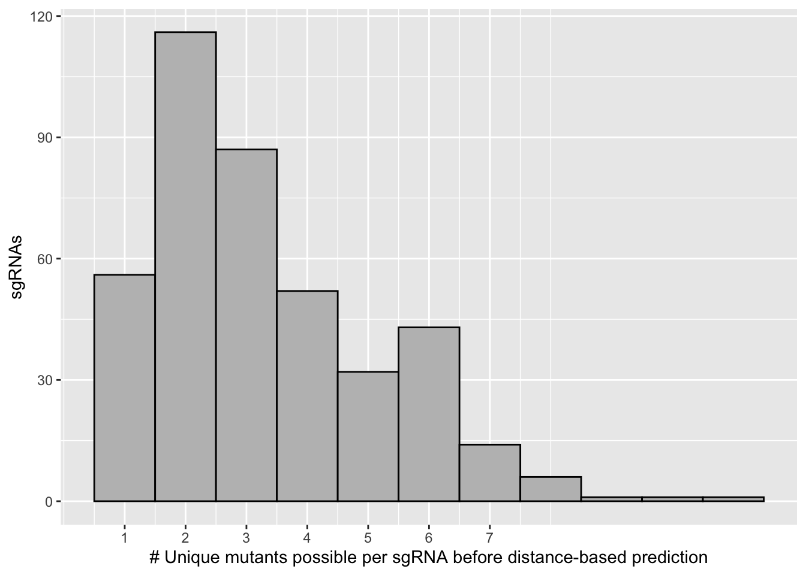
| Version | Author | Date |
|---|---|---|
| 6b51aa2 | haiderinam | 2023-03-25 |
bedata_inner_simple_filtered_nodups=bedata_inner_simple_filtered%>%dplyr::select(species,sgRNA.Seq)%>%group_by(sgRNA.Seq,species)%>%filter(row_number()==1)
# The no dups filtering takes out sgRNAs making the same mutant a couple of different ways
bedata_inner_simple_filtered_sum=bedata_inner_simple_filtered_nodups%>%group_by(sgRNA.Seq)%>%summarize(ct=n())
ggplot(bedata_inner_simple_filtered_sum,aes(x=ct))+geom_histogram(binwidth = 1,color="black",fill="gray")+
scale_x_continuous("# Unique mutants possible per sgRNA after distance-based prediction")+
scale_y_continuous("sgRNAs")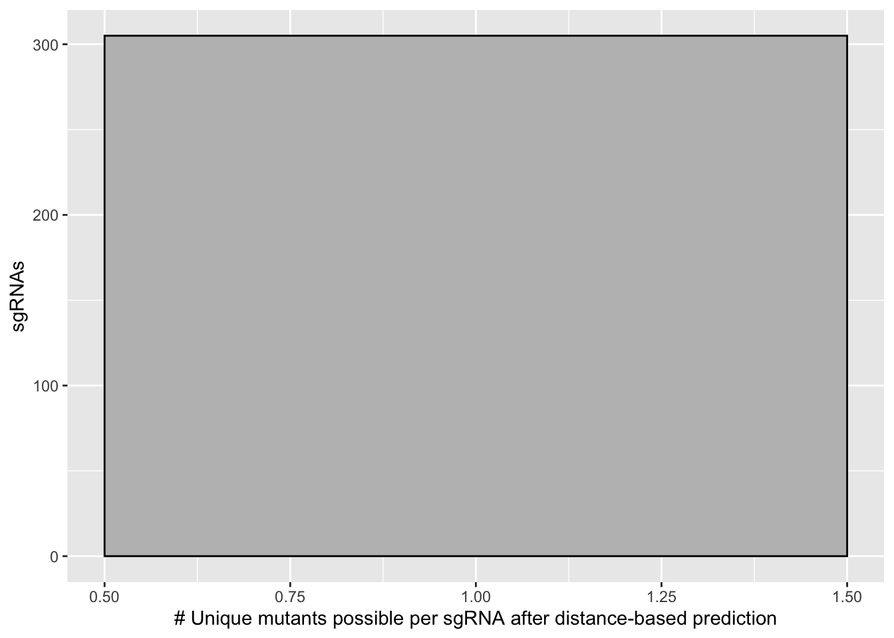
| Version | Author | Date |
|---|---|---|
| 6b51aa2 | haiderinam | 2023-03-25 |
sgrnas_per_mutant=bedata_inner_simple%>%group_by(species)%>%summarize(sgRNAs_per_mutant=n())
ggplot(sgrnas_per_mutant,aes(x=sgRNAs_per_mutant))+geom_histogram(binwidth = 1,color="black",fill="gray")+
scale_x_continuous("# Unique sgRNAs that are predicted to have highest priority to make the mutant")+
scale_y_continuous("Mutants")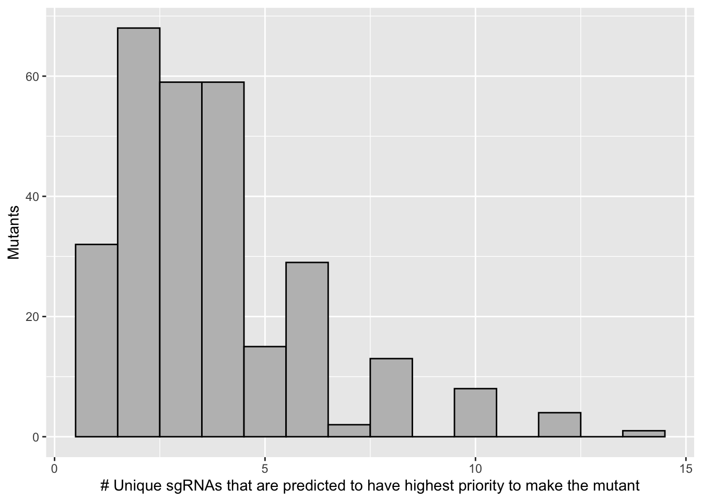
| Version | Author | Date |
|---|---|---|
| 6b51aa2 | haiderinam | 2023-03-25 |
ggplot(bedata_singlemutants_sum,aes(x=ct))+geom_histogram(binwidth = 1,color="black",fill="gray")+
scale_x_continuous("# Unique sgRNAs that are predicted to have highest priority to make the mutant",breaks=c(1,2,3,4,5,6,7))+
scale_y_continuous("Mutants")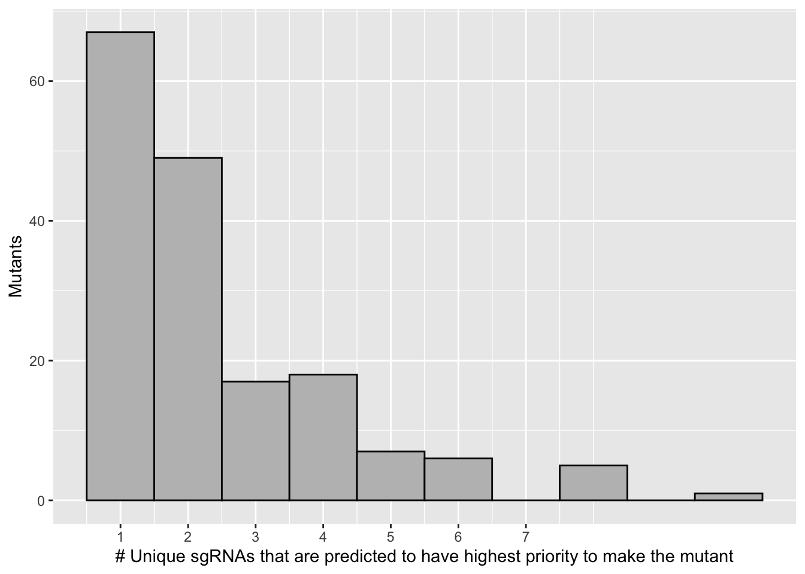
| Version | Author | Date |
|---|---|---|
| 6b51aa2 | haiderinam | 2023-03-25 |
Plotting all the data
Plotting
ggplot(bedata_inner_simple,aes(x=BE.LFC))+geom_histogram()`stat_bin()` using `bins = 30`. Pick better value with `binwidth`.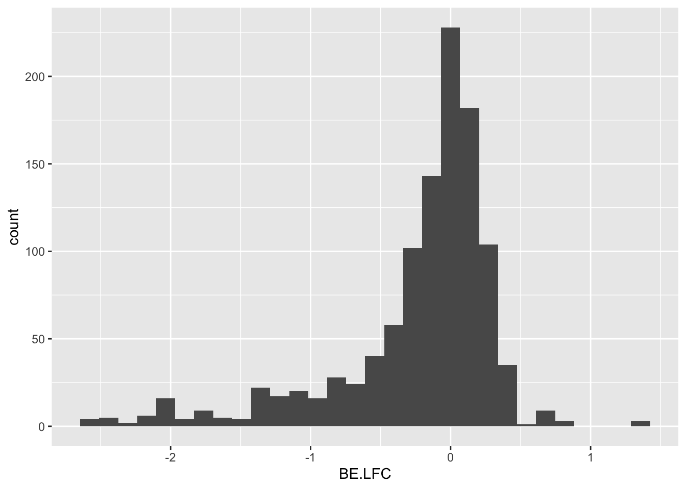
| Version | Author | Date |
|---|---|---|
| 6b51aa2 | haiderinam | 2023-03-25 |
ggplot(bedata_inner_simple,aes(x=SM.netgr_obs_mean))+geom_histogram()`stat_bin()` using `bins = 30`. Pick better value with `binwidth`.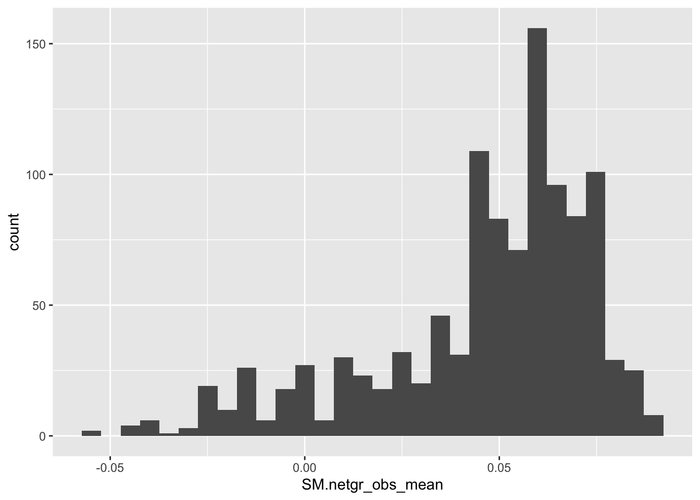
| Version | Author | Date |
|---|---|---|
| 6b51aa2 | haiderinam | 2023-03-25 |
#######################Plotting all data unfiltered#####################
# Figure Legend
ggplot(bedata_inner_simple%>%filter(Type%in%"ABE"),aes(x=BE.LFC,y=SM.netgr_obs_mean))+
geom_point(color="black",shape=21,size=2,aes(fill=significance_status))+
scale_y_continuous("SM Net Growth Rate")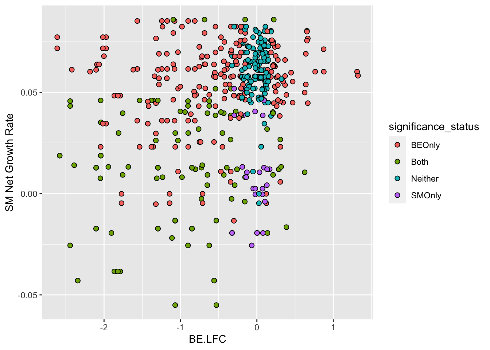
| Version | Author | Date |
|---|---|---|
| 6b51aa2 | haiderinam | 2023-03-25 |
# ggsave("output/BE_SM_FigLegend.pdf",width=10,height=4,units = "in",useDingbats=F)
ggplot(bedata_inner_simple%>%filter(Type%in%"ABE"),aes(x=BE.LFC,y=SM.netgr_obs_mean,label=species,color=significance_status))+
geom_text()+
scale_y_continuous("SM Net Growth Rate")+
cleanup+
theme(legend.position="none")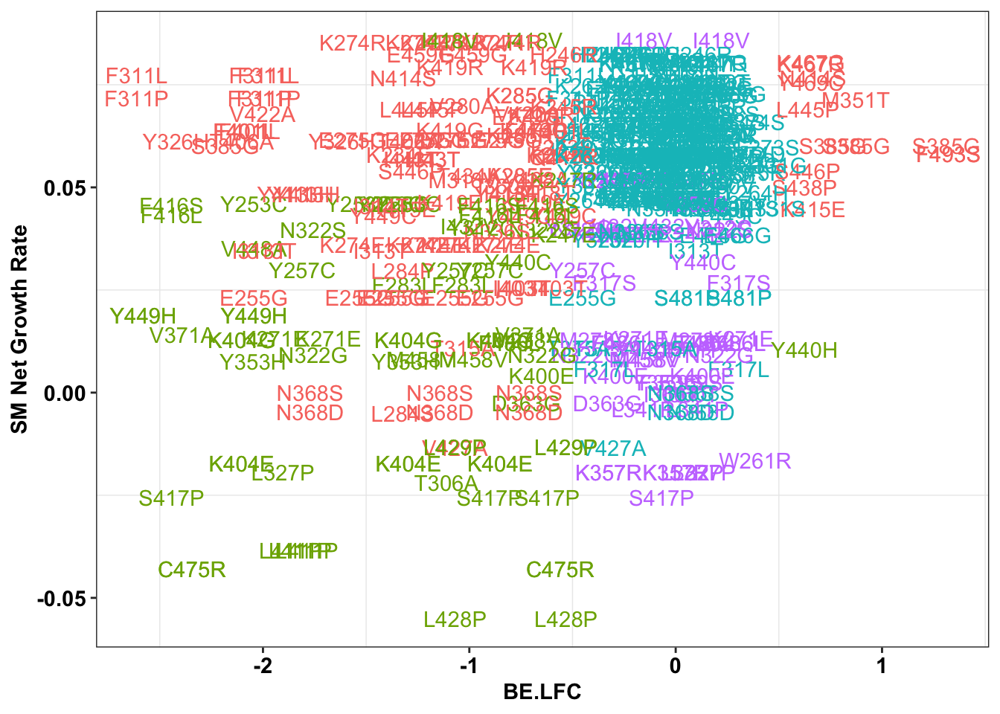
| Version | Author | Date |
|---|---|---|
| 6b51aa2 | haiderinam | 2023-03-25 |
# ggsave("output/BE_SM_Plots/be_sm_abe_all_labels.pdf",width=5,height=4,units = "in",useDingbats=F)
ggplot(bedata_inner_simple%>%filter(Type%in%"ABE"),aes(x=BE.LFC,y=SM.netgr_obs_mean))+
geom_point(color="black",shape=21,size=2,aes(fill=significance_status))+
scale_y_continuous("SM Net Growth Rate")+
cleanup+
theme(legend.position="none")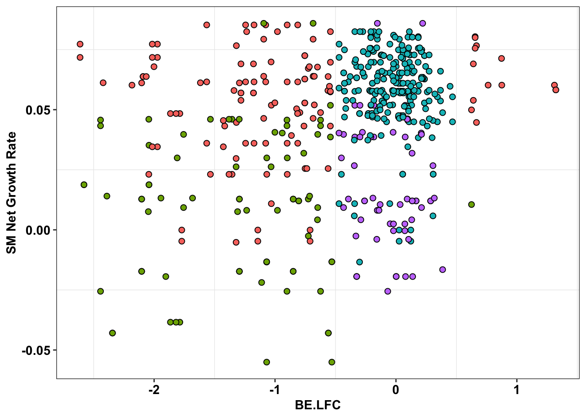
| Version | Author | Date |
|---|---|---|
| 6b51aa2 | haiderinam | 2023-03-25 |
# ggsave("output/BE_SM_Plots/be_sm_abe_all_ponts.pdf",width=5,height=4,units = "in",useDingbats=F)
ggplot(bedata_inner_simple%>%filter(Type%in%"CBE"),aes(x=BE.LFC,y=SM.netgr_obs_mean,label=species,color=significance_status))+
geom_text()+
scale_y_continuous("SM Net Growth Rate")+
cleanup+
theme(legend.position="none")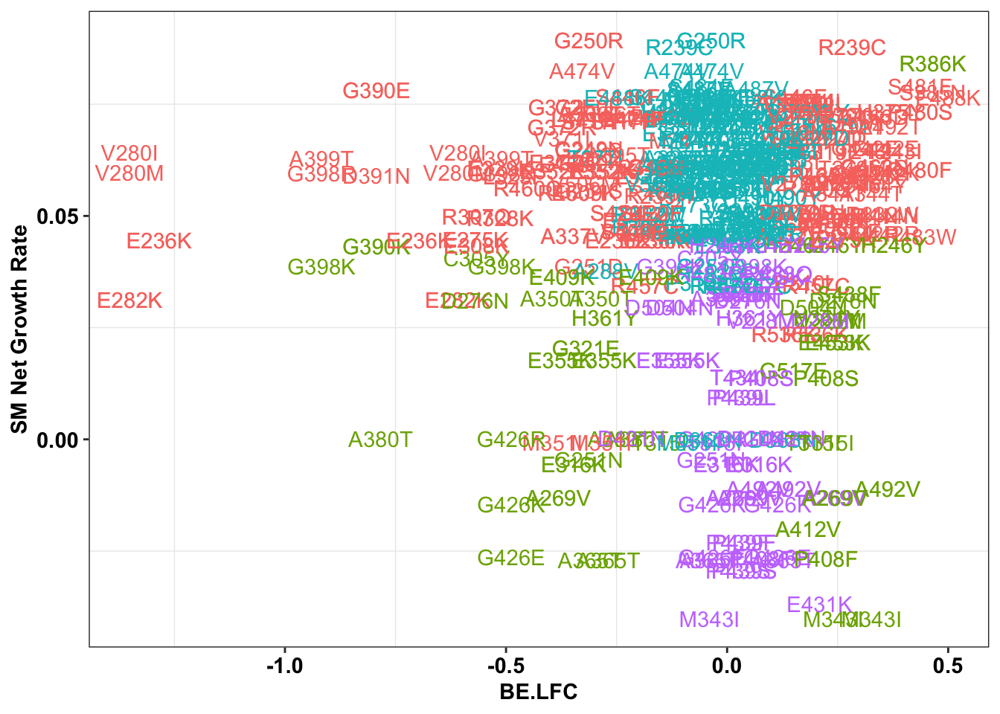
| Version | Author | Date |
|---|---|---|
| 6b51aa2 | haiderinam | 2023-03-25 |
# ggsave("output/BE_SM_Plots/be_sm_cbe_all_labels.pdf",width=5,height=4,units = "in",useDingbats=F)
ggplot(bedata_inner_simple%>%filter(Type%in%"CBE"),aes(x=BE.LFC,y=SM.netgr_obs_mean))+
geom_point(color="black",shape=21,size=2,aes(fill=significance_status))+
scale_y_continuous("SM Net Growth Rate")+
cleanup+
theme(legend.position="none")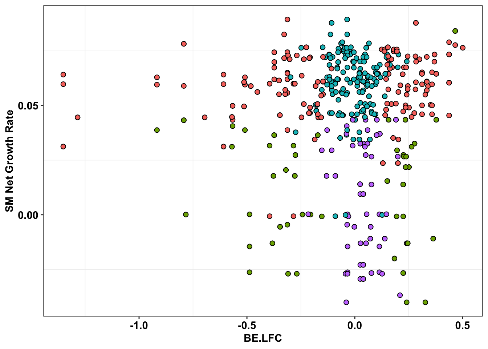
| Version | Author | Date |
|---|---|---|
| 6b51aa2 | haiderinam | 2023-03-25 |
# ggsave("output/BE_SM_Plots/be_sm_cbe_all_ponts.pdf",width=5,height=4,units = "in",useDingbats=F)
#######################Plotting data filtered for sgRNA Predictions#####################
ggplot(bedata_inner_simple_filtered%>%filter(Type%in%"ABE"),aes(x=BE.LFC,y=SM.netgr_obs_mean,label=species,color=significance_status))+
geom_text()+
scale_y_continuous("SM Net Growth Rate")+
cleanup+
theme(legend.position="none")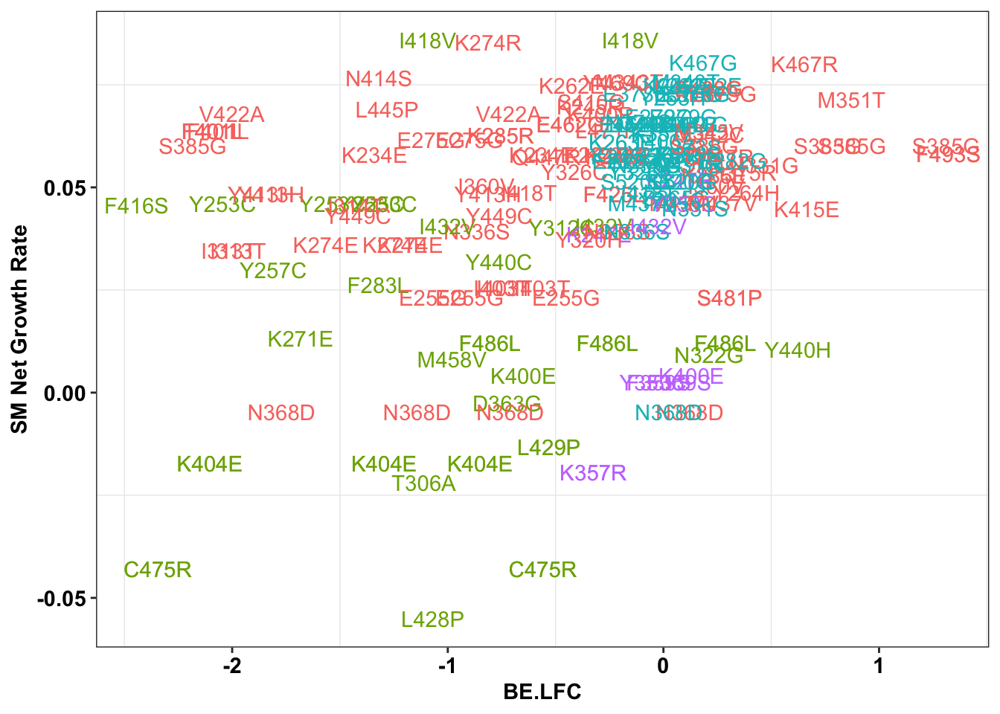
| Version | Author | Date |
|---|---|---|
| 6b51aa2 | haiderinam | 2023-03-25 |
# ggsave("output/BE_SM_Plots/be_sm_abe_filtered_labels.pdf",width=5,height=4,units = "in",useDingbats=F)
ggplot(bedata_inner_simple_filtered%>%filter(Type%in%"ABE"),aes(x=BE.LFC,y=SM.netgr_obs_mean))+
geom_point(color="black",shape=21,size=2,aes(fill=significance_status))+
scale_y_continuous("SM Net Growth Rate")+
cleanup+
theme(legend.position="none")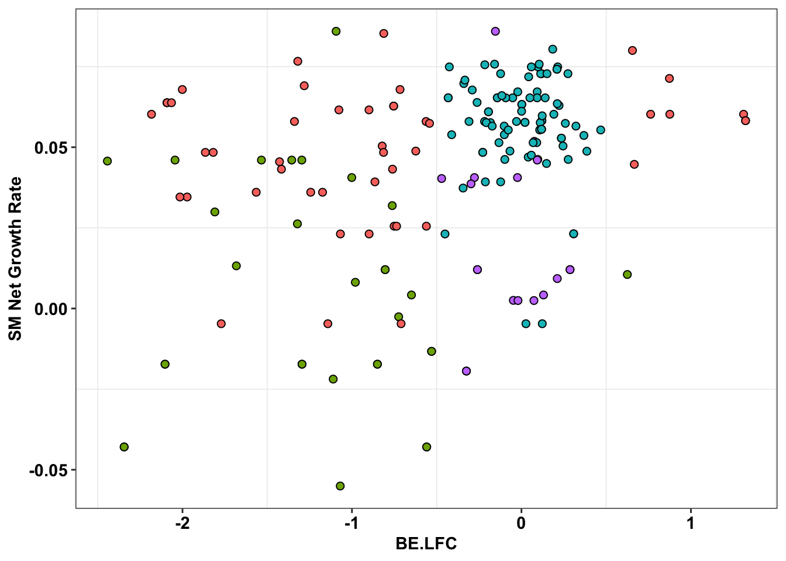
| Version | Author | Date |
|---|---|---|
| 6b51aa2 | haiderinam | 2023-03-25 |
# ggsave("output/BE_SM_Plots/be_sm_abe_filtered_ponts.pdf",width=5,height=4,units = "in",useDingbats=F)
ggplot(bedata_inner_simple_filtered%>%filter(Type%in%"CBE"),aes(x=BE.LFC,y=SM.netgr_obs_mean,label=species,color=significance_status))+
geom_text()+
scale_y_continuous("SM Net Growth Rate")+
cleanup+
theme(legend.position="none")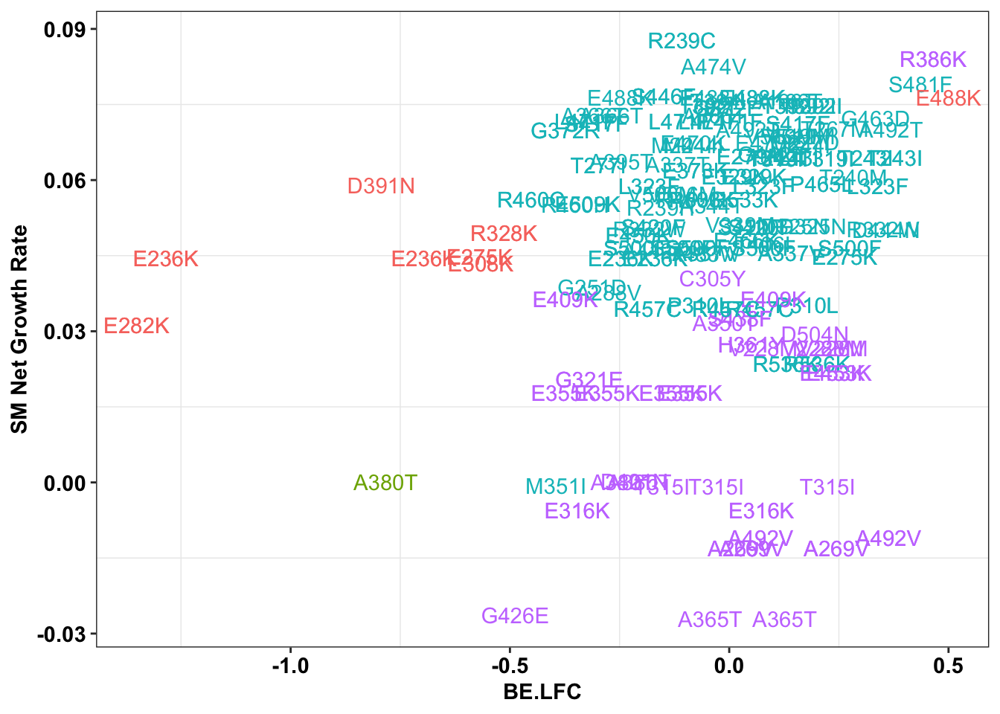
| Version | Author | Date |
|---|---|---|
| 6b51aa2 | haiderinam | 2023-03-25 |
# ggsave("output/BE_SM_Plots/be_sm_cbe_filtered_labels.pdf",width=5,height=4,units = "in",useDingbats=F)
ggplot(bedata_inner_simple_filtered%>%filter(Type%in%"CBE"),aes(x=BE.LFC,y=SM.netgr_obs_mean))+
geom_point(color="black",shape=21,size=2,aes(fill=significance_status))+
scale_y_continuous("SM Net Growth Rate")+
cleanup+
theme(legend.position="none")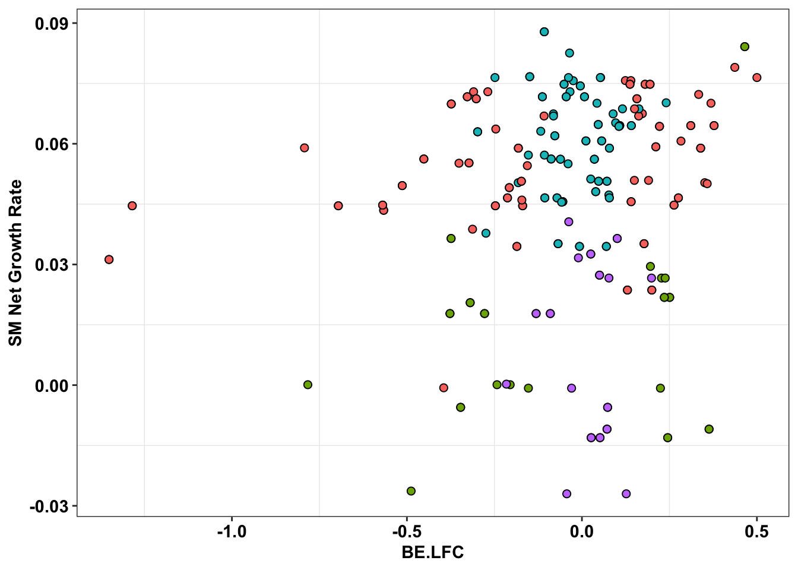
| Version | Author | Date |
|---|---|---|
| 6b51aa2 | haiderinam | 2023-03-25 |
# ggsave("output/BE_SM_Plots/be_sm_cbe_filtered_ponts.pdf",width=5,height=4,units = "in",useDingbats=F)
#############
bedata_inner_grouped=bedata_inner_simple_filtered%>%group_by(Type,species)%>%summarize(BE.LFC=mean(BE.LFC),SM.netgr_obs_mean=mean(SM.netgr_obs_mean))`summarise()` has grouped output by 'Type'. You can override using the `.groups` argument.bedata_inner_grouped=bedata_inner_grouped%>%rowwise()%>%
mutate(BE.Significant=case_when(BE.LFC<=-1~T,
BE.LFC>=1~T,
T~F),
SM.Significant=case_when(SM.netgr_obs_mean<.03~T,
SM.netgr_obs_mean>.07~T,
T~F),
significance_status=case_when((BE.Significant%in%T)&&(SM.Significant%in%F)~"BEOnly",
(BE.Significant%in%F)&&(SM.Significant%in%T)~"SMOnly",
(BE.Significant%in%T)&&(SM.Significant%in%T)~"Both",
T~"Neither"))
ggplot(bedata_inner_grouped%>%filter(Type%in%"ABE"),aes(x=BE.LFC,y=SM.netgr_obs_mean,label=species,color=significance_status))+
geom_text()+
scale_y_continuous("SM Net Growth Rate")+
cleanup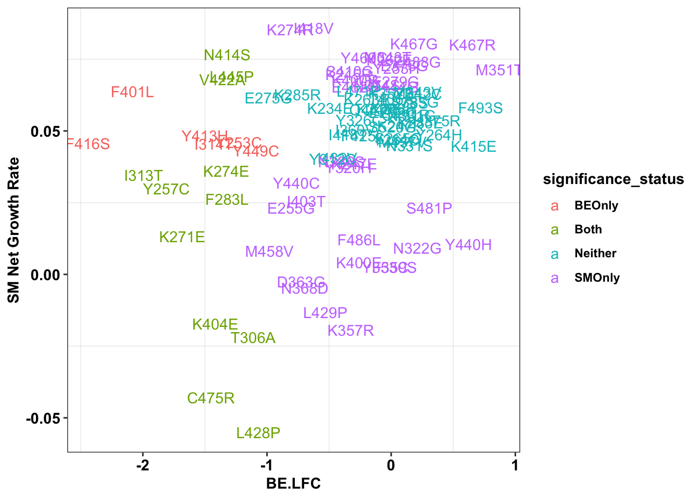
| Version | Author | Date |
|---|---|---|
| 6b51aa2 | haiderinam | 2023-03-25 |
# theme(legend.position="none")+
# ggsave("output/BE_SM_Plots/be_sm_abe_filtered_labels_mean.pdf",width=5,height=4,units = "in",useDingbats=F)
#######################Figuring out correlation coefficients and FETs#####################
# ABE all
testdata=bedata_inner_simple%>%filter(Type%in%"ABE")
cor(testdata$BE.LFC,testdata$SM.netgr_obs_mean)[1] 0.2652287table=contab_maker(testdata)
table PP_unique PN_unique
[1,] 33 26
[2,] 56 88fisher.test(table)
Fisher's Exact Test for Count Data
data: table
p-value = 0.02988
alternative hypothesis: true odds ratio is not equal to 1
95 percent confidence interval:
1.032234 3.863814
sample estimates:
odds ratio
1.98757 # CBE all
testdata=bedata_inner_simple%>%filter(Type%in%"CBE")
cor(testdata$BE.LFC,testdata$SM.netgr_obs_mean)[1] -0.004758033table=contab_maker(testdata)
table PP_unique PN_unique
[1,] 5 36
[2,] 14 107fisher.test(table)
Fisher's Exact Test for Count Data
data: table
p-value = 1
alternative hypothesis: true odds ratio is not equal to 1
95 percent confidence interval:
0.2792674 3.4019968
sample estimates:
odds ratio
1.061117 # sum(as.numeric(testdata$BE.Significant))
# length(testdata[testdata$significance_status%in%c("Both","BEOnly"),"BE.Significant"])
# sum(as.numeric(testdata$SM.Significant))
# length(testdata[testdata$significance_status%in%c("Both","SMOnly"),"BE.Significant"])
# ABE Filtered
testdata=bedata_inner_simple_filtered%>%filter(Type%in%"ABE")
cor(testdata$BE.LFC,testdata$SM.netgr_obs_mean)[1] 0.3223448table=contab_maker(testdata)
table PP_unique PN_unique
[1,] 18 12
[2,] 25 47fisher.test(table)
Fisher's Exact Test for Count Data
data: table
p-value = 0.02724
alternative hypothesis: true odds ratio is not equal to 1
95 percent confidence interval:
1.076354 7.483371
sample estimates:
odds ratio
2.789857 # CBE Filtered
testdata=bedata_inner_simple_filtered%>%filter(Type%in%"CBE")
cor(testdata$BE.LFC,testdata$SM.netgr_obs_mean)[1] 0.1067391table=contab_maker(testdata)
table PP_unique PN_unique
[1,] 1 19
[2,] 7 59fisher.test(table)
Fisher's Exact Test for Count Data
data: table
p-value = 0.6747
alternative hypothesis: true odds ratio is not equal to 1
95 percent confidence interval:
0.009361705 3.857699269
sample estimates:
odds ratio
0.447064 # ABE Filtered Means
testdata=bedata_inner_grouped%>%filter(Type%in%"ABE")
cor(testdata$BE.LFC,testdata$SM.netgr_obs_mean)[1] 0.2889848table=contab_maker(testdata)
table PP_unique PN_unique
[1,] 8 26
[2,] 10 44fisher.test(table)
Fisher's Exact Test for Count Data
data: table
p-value = 0.5963
alternative hypothesis: true odds ratio is not equal to 1
95 percent confidence interval:
0.406765 4.360801
sample estimates:
odds ratio
1.349066 ##################################
############# Of the sgRNAs that score, how often do any of the predicted variants score (when considered as single mutations.) How does this break down by PAM sequence?
############## When a variant is "covered" by an sgRNA in the library, AND it scores by Saturation Mutagenesis, How often does the sgRNA score in the base editor screen? How does this break down by PAM?
table=contab_maker(bedata_inner_simple%>%filter(Type%in%"ABE"))
fisher.test(table)
Fisher's Exact Test for Count Data
data: table
p-value = 0.02988
alternative hypothesis: true odds ratio is not equal to 1
95 percent confidence interval:
1.032234 3.863814
sample estimates:
odds ratio
1.98757 table=contab_maker(bedata_inner_simple%>%filter(Type%in%"CBE"))
fisher.test(table)
Fisher's Exact Test for Count Data
data: table
p-value = 1
alternative hypothesis: true odds ratio is not equal to 1
95 percent confidence interval:
0.2792674 3.4019968
sample estimates:
odds ratio
1.061117 ############## Do mult-nucleotide variants score more often than single nucleotide variants. in the base editor library, Is this regardless of PAM sequence?
############## Are multinucleotide variant hits flagging regions of the protein that have more phenotypes than average? Less than average? Or just average? How does this break down by PAM?
############## If a region is negative by sgRNA how often is it negative by saturation mutagenesis? How is this affected by PAM others?Plotting out the distribution of growht rates in the BE data and in the SM data
ggplot(bedata_inner_simple_filtered,aes(x=BE.LFC))+geom_histogram()`stat_bin()` using `bins = 30`. Pick better value with `binwidth`.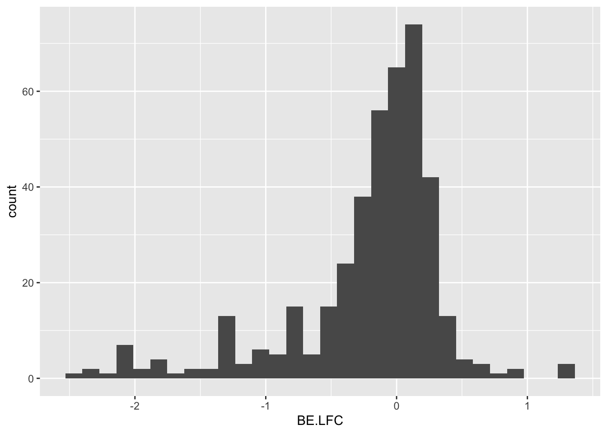
ggplot(bedata_inner_simple,aes(x=SM.netgr_obs_mean))+geom_histogram()`stat_bin()` using `bins = 30`. Pick better value with `binwidth`.ggplot(bedata_inner_simple_filtered,aes(x=SM.padj))+geom_histogram()`stat_bin()` using `bins = 30`. Pick better value with `binwidth`.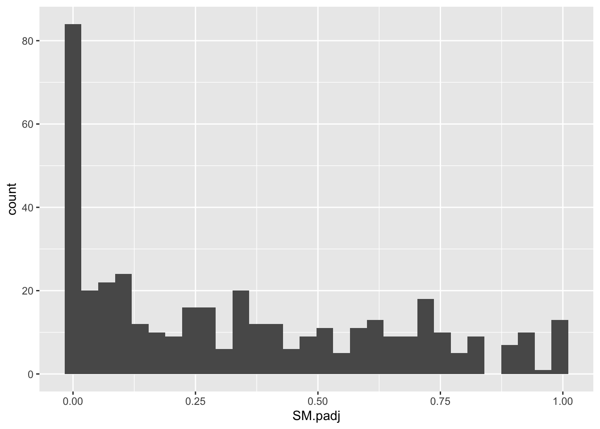
ggplot(bedata_inner_simple_filtered,aes(x=BE.FDR))+geom_histogram()+scale_x_continuous(trans="log10")`stat_bin()` using `bins = 30`. Pick better value with `binwidth`.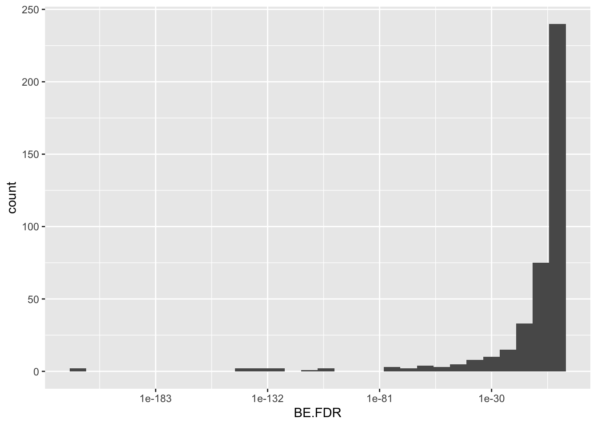
ggplot(bedata_inner,aes(y=BE_p.value,x=BE_LFC))+geom_point()+scale_x_continuous(limits=c(-1,.5))+geom_hline(color="red",yintercept = .05)Warning: Removed 132 rows containing missing values (geom_point).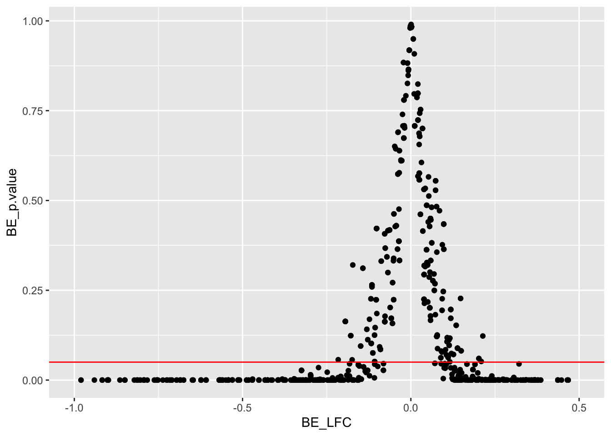
x=bedata_inner%>%filter(BE_p.value<.05)
ggplot(bedata_inner_simple,aes(x=SM.netgr_obs_mean,y=SM.padj))+geom_point()+geom_hline(color="red",yintercept = .05)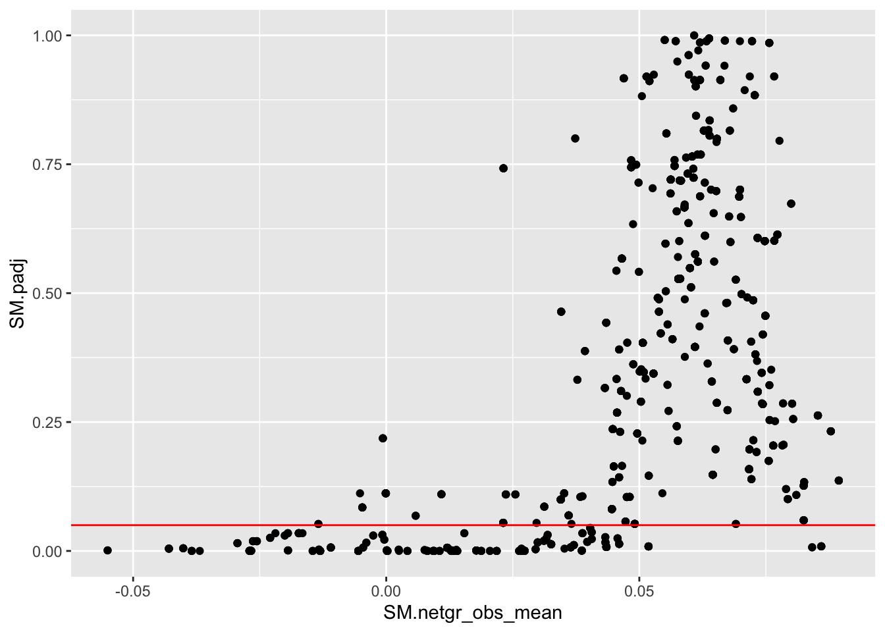
Which thresholds work best to look at significant hits? Setting Thresholds for Significant Hits
input_df_all=bedata_inner_simple
input_df_filtered=bedata_inner_simple_filtered
# The LFC threshold for the BE data
# be_threshold=seq(.5,1,.1)
be_threshold=c(0.1,.25,.5,.75,1,1.25)
# The P Value threshold for the SM data
sm_threshold=c(.01,.025,.05,.1,.2,.3)
# Initializing empty dataframe
output_df=data.frame(matrix(ncol = 5, nrow = 4*length(be_threshold)*length(sm_threshold)))
colnames(output_df)=c("BE.LFC","SM.Pval","FET.Pval","Type","sgRNA.Prediction.status")
iter=1
# be_threshold_i=.5
# sm_threshold=.05
for(be_threshold_i in be_threshold){
for(sm_threshold_i in sm_threshold){
input_df_all=input_df_all%>%
mutate(BE.Significant=case_when(abs(BE.LFC)>be_threshold_i~T,
T~F),
SM.Significant=case_when(SM.padj<sm_threshold_i~T,
T~F))%>%
rowwise%>%
mutate(significance_status=case_when((BE.Significant%in%T)&&(SM.Significant%in%F)~"BEOnly",
(BE.Significant%in%F)&&(SM.Significant%in%T)~"SMOnly",
(BE.Significant%in%T)&&(SM.Significant%in%T)~"Both",
T~"Neither"))
input_df_filtered=input_df_filtered%>%
mutate(BE.Significant=case_when(abs(BE.LFC)>be_threshold_i~T,
T~F),
SM.Significant=case_when(SM.padj<sm_threshold_i~T,
T~F),
significance_status=case_when((BE.Significant%in%T)&&(SM.Significant%in%F)~"BEOnly",
(BE.Significant%in%F)&&(SM.Significant%in%T)~"SMOnly",
(BE.Significant%in%T)&&(SM.Significant%in%T)~"Both",
T~"Neither"))
input_df=input_df_all
table=fisher.test(contab_maker(input_df%>%filter(Type%in%"ABE")))
pval_i=table$p.value
output_df[iter,1]=be_threshold_i
output_df[iter,2]=sm_threshold_i
output_df[iter,3]=pval_i
output_df[iter,4]="ABE"
output_df[iter,5]="AllPossible"
table=fisher.test(contab_maker(input_df%>%filter(Type%in%"CBE")))
pval_i=table$p.value
output_df[(iter+1),1]=be_threshold_i
output_df[(iter+1),2]=sm_threshold_i
output_df[(iter+1),3]=pval_i
output_df[(iter+1),4]="CBE"
output_df[(iter+1),5]="AllPossible"
input_df=input_df_filtered
table=fisher.test(contab_maker(input_df%>%filter(Type%in%"ABE")))
pval_i=table$p.value
output_df[(iter+2),1]=be_threshold_i
output_df[(iter+2),2]=sm_threshold_i
output_df[(iter+2),3]=pval_i
output_df[(iter+2),4]="ABE"
output_df[(iter+2),5]="Likeliest"
table=fisher.test(contab_maker(input_df%>%filter(Type%in%"CBE")))
pval_i=table$p.value
output_df[(iter+3),1]=be_threshold_i
output_df[(iter+3),2]=sm_threshold_i
output_df[(iter+3),3]=pval_i
output_df[(iter+3),4]="CBE"
output_df[(iter+3),5]="Likeliest"
iter=iter+4
}
}
ggplot(output_df,aes(x=as.factor(BE.LFC),y=as.factor(SM.Pval),fill=-log(FET.Pval)))+
geom_tile()+
scale_fill_gradient2(low="blue",high = "red",midpoint=2.3)+
facet_grid(sgRNA.Prediction.status~Type)+
scale_x_discrete("BE Threshold for Significance (LFC)",expand=c(0,0))+
scale_y_discrete("SM Threshold for Significance (DESeq P Value)",expand=c(0,0))
#
ggplot(output_df%>%filter(sgRNA.Prediction.status%in%"Likeliest",Type%in%"ABE"),aes(x=as.factor(BE.LFC),y=as.factor(SM.Pval),fill=-log(FET.Pval)))+
geom_tile()+
scale_fill_gradient2(low="blue",high = "red",midpoint=2.3)+
# facet_wrap(~Type,nrow=2)+
scale_x_discrete("BE Threshold for Significance (LFC)",expand=c(0,0))+
scale_y_discrete("SM Threshold for Significance (DESeq P Value)",expand=c(0,0))+
cleanup+
theme(legend.position = "none",aspect.ratio = 1)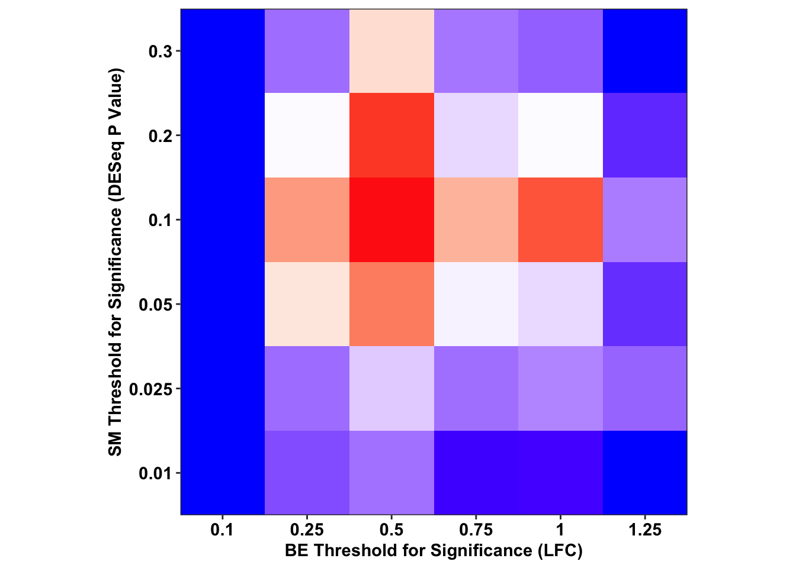
# ggsave("output/BE_SM_Plots/threshold_analysis_abe.pdf",width=4,height=4,units="in",useDingbats=F)
#
ggplot(output_df%>%filter(sgRNA.Prediction.status%in%"Likeliest",Type%in%"CBE"),aes(x=as.factor(BE.LFC),y=as.factor(SM.Pval),fill=-log(FET.Pval)))+
geom_tile()+
scale_fill_gradient2(low="blue",high = "red",midpoint=2.3)+
# facet_wrap(~Type,nrow=2)+
scale_x_discrete("BE Threshold for Significance (LFC)",expand=c(0,0))+
scale_y_discrete("SM Threshold for Significance (DESeq P Value)",expand=c(0,0))+
cleanup+
theme(legend.position = "none",aspect.ratio = 1)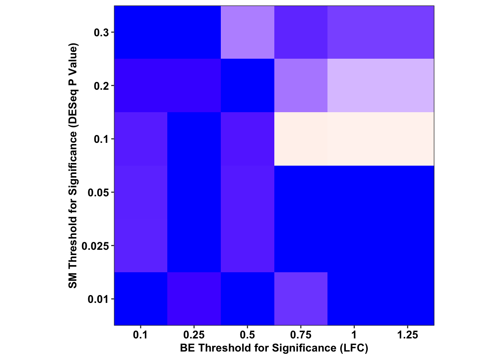
# ggsave("output/BE_SM_Plots/threshold_analysis_cbe.pdf",width=4,height=4,units="in",useDingbats=F)
# Plotting legend separately
library(cowplot)Warning: package 'cowplot' was built under R version 4.0.2library(ggpubr)Warning: package 'ggpubr' was built under R version 4.0.2
Attaching package: 'ggpubr'The following object is masked from 'package:cowplot':
get_legendforcowplot=ggplot(output_df%>%filter(sgRNA.Prediction.status%in%"Likeliest",Type%in%"ABE"),aes(x=as.factor(BE.LFC),y=as.factor(SM.Pval),fill=-log(FET.Pval)))+
geom_tile()+
scale_fill_gradient2(low="blue",high = "red",midpoint=2.3)+
# facet_wrap(~Type,nrow=2)+
scale_x_discrete("BE Threshold for Significance (LFC)",expand=c(0,0))+
scale_y_discrete("SM Threshold for Significance (DESeq P Value)",expand=c(0,0))+
cleanup+
theme(aspect.ratio = 1)
my_legend=get_legend(forcowplot)
as_ggplot(my_legend)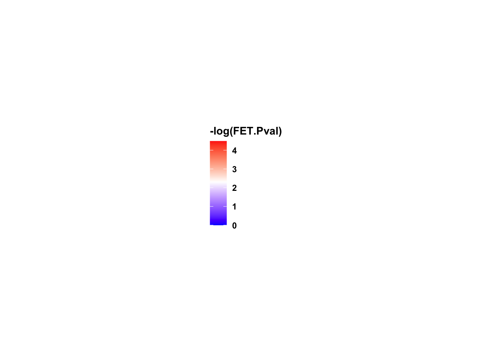
# ggsave("output/BE_SM_Plots/threshold_analysis_legend.pdf")Looking at false positives in BE and SM data -How many of the false negatives in the BE data (purple false positives in SM) are guides that were strongly predicted to make other mutants. If the guides were predicted to make other mutants, was it significantly more mutants than the guides in the green (both) region? -Of the guides in the green region, how many are scored so that they’re made by multiple guides? Do the mutants in the green region, on average, made by more sgRNAs than the mutants in the other regions?
Controls: CBE: Positive control for low guide cutting efficiency sgRNAs predicted to make a single mutant only: Positive control real effect… is the correlation for these sgRNAs higher with the SM data? Answer: sgRNAs that are only predicted to make a single mutant aren’t really better in agreement with SM data
What about distance? Do sgRNAs making mutants near 4,5,6 score better? Answer: depends on what you mean by better. Their p-value is better.
bedata_singlemutants=bedata_inner_simple%>%filter(BE.n_nuc%in%1)
# For each sgRNA, figure out which mutant is at the minimum distance
# If there are multiple mutants at the minimum distance, note down both of them.
bedata_sum=bedata_singlemutants%>%
group_by(sgRNA.Seq)%>%
summarize(mutants_per_sgRNA=n(),
mindist=min(distance_from_5),
species.mindist=paste(species[which(distance_from_5==min(distance_from_5))],collapse=", "))
# Sometimes a guide makes the same amino acid substitution two different ways (eg a snp and an mnv that make the same substitution). When this happens, the algorithm thinks that the guide is making two separate amino acid substitutions. this next conditional statement is going to remove those duplicates.
bedata_sum=bedata_sum%>%
rowwise()%>%
mutate(species.mindist=case_when(
strsplit(species.mindist,", ")[[1]][1]==
strsplit(species.mindist,", ")[[1]][2]~strsplit(species.mindist,", ")[[1]][1],
T~species.mindist))
bedata_singlemutants=merge(bedata_singlemutants,bedata_sum,by="sgRNA.Seq")
x=bedata_singlemutants%>%filter(sgRNA.Seq%in%"AAAGAAGCTGCAGTCATGAA")
# sgRNAs making snvs, not MNVs
ggplot(bedata_singlemutants%>%filter(Type%in%"ABE"),aes(x=BE.LFC,y=SM.netgr_obs_mean,label=species,color=significance_status))+
geom_text()+
scale_y_continuous("SM Net Growth Rate")+
cleanup+
theme(legend.position="none")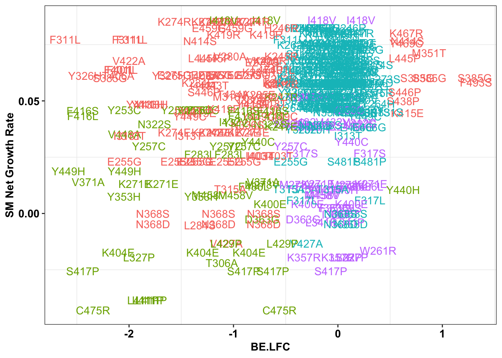
x=bedata_singlemutants%>%filter(Type%in%"ABE")
cor(x$SM.netgr_obs_mean,x$BE.LFC)[1] 0.2372473table=contab_maker(x)
fisher.test(table)
Fisher's Exact Test for Count Data
data: table
p-value = 0.05204
alternative hypothesis: true odds ratio is not equal to 1
95 percent confidence interval:
0.9731008 3.8310037
sample estimates:
odds ratio
1.922518 # sgRNAs making snvs, not MNVs AND making a single mutant
ggplot(bedata_singlemutants%>%filter(mutants_per_sgRNA.y%in%c(1,2),Type%in%"ABE"),aes(x=BE.LFC,y=SM.netgr_obs_mean,label=species,color=significance_status))+
geom_text()+
scale_y_continuous("SM Net Growth Rate")+
cleanup+
theme(legend.position="none")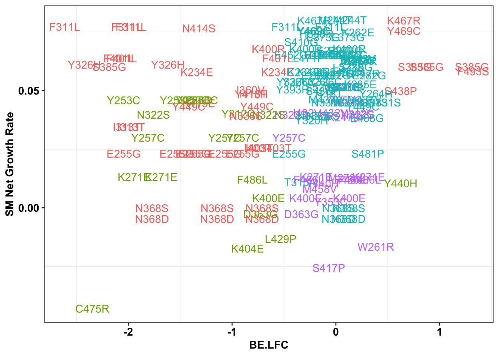
x=bedata_singlemutants%>%filter(mutants_per_sgRNA.y%in%c(1,2),Type%in%"ABE")
cor(x$SM.netgr_obs_mean,x$BE.LFC)[1] 0.1393316table=contab_maker(x)
fisher.test(table)
Fisher's Exact Test for Count Data
data: table
p-value = 0.6435
alternative hypothesis: true odds ratio is not equal to 1
95 percent confidence interval:
0.4786958 3.5418568
sample estimates:
odds ratio
1.311506 # bedata_singlemutants=bedata_inner_simple
# sgRNAs making snvs, not MNVs AND having a low distance away from position 5.
ggplot(bedata_singlemutants%>%filter(distance_from_5%in%c(0,1,2,3),Type%in%"ABE"),aes(x=BE.LFC,y=SM.netgr_obs_mean,label=species,color=significance_status))+
geom_text()+
scale_y_continuous("SM Net Growth Rate")+
cleanup+
theme(legend.position="none")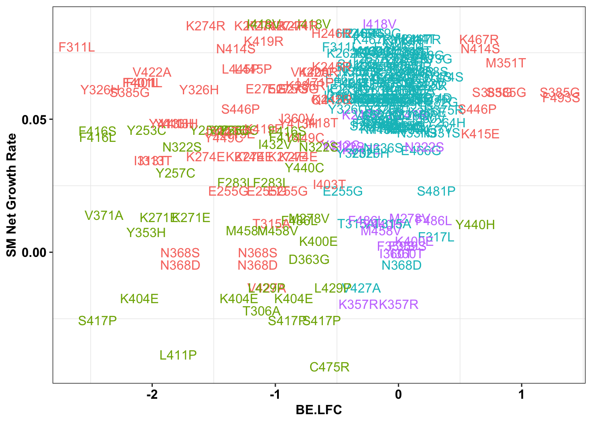
x=bedata_singlemutants%>%filter(distance_from_5%in%c(0,1,2,3),Type%in%"ABE")
# cor(bedata_inner_simple$SM.netgr_obs_mean,bedata_inner_simple$BE.LFC)
cor(x$SM.netgr_obs_mean,x$BE.LFC)[1] 0.2551021table=contab_maker(x)
fisher.test(table)
Fisher's Exact Test for Count Data
data: table
p-value = 0.00174
alternative hypothesis: true odds ratio is not equal to 1
95 percent confidence interval:
1.532214 8.583771
sample estimates:
odds ratio
3.555468 x_sum=x%>%group_by(species)%>%summarize(SM.netgr_obs_mean=mean(SM.netgr_obs_mean),
SM.padj=mean(SM.padj),
BE.LFC=mean(BE.LFC),
num_sgRNAs=n())
x_sum=x_sum%>%
mutate(BE.Significant=case_when(abs(BE.LFC)>0.5~T,
T~F),
SM.Significant=case_when(SM.padj<0.05~T,
T~F))%>%
rowwise()%>%
mutate(significance_status=case_when((BE.Significant%in%T)&&(SM.Significant%in%F)~"BEOnly",
(BE.Significant%in%F)&&(SM.Significant%in%T)~"SMOnly",
(BE.Significant%in%T)&&(SM.Significant%in%T)~"Both",
T~"Neither"))
cor(x_sum$SM.netgr_obs_mean,x_sum$BE.LFC)[1] 0.3501625table=contab_maker(x_sum)
fisher.test(table)
Fisher's Exact Test for Count Data
data: table
p-value = 3.54e-05
alternative hypothesis: true odds ratio is not equal to 1
95 percent confidence interval:
2.436701 18.290955
sample estimates:
odds ratio
6.47118 ggplot(x_sum,aes(x=BE.LFC,y=SM.netgr_obs_mean,label=species,color=significance_status))+
geom_text()+
scale_y_continuous("SM Net Growth Rate")+
cleanup+
theme(legend.position="none",aspect.ratio = 1)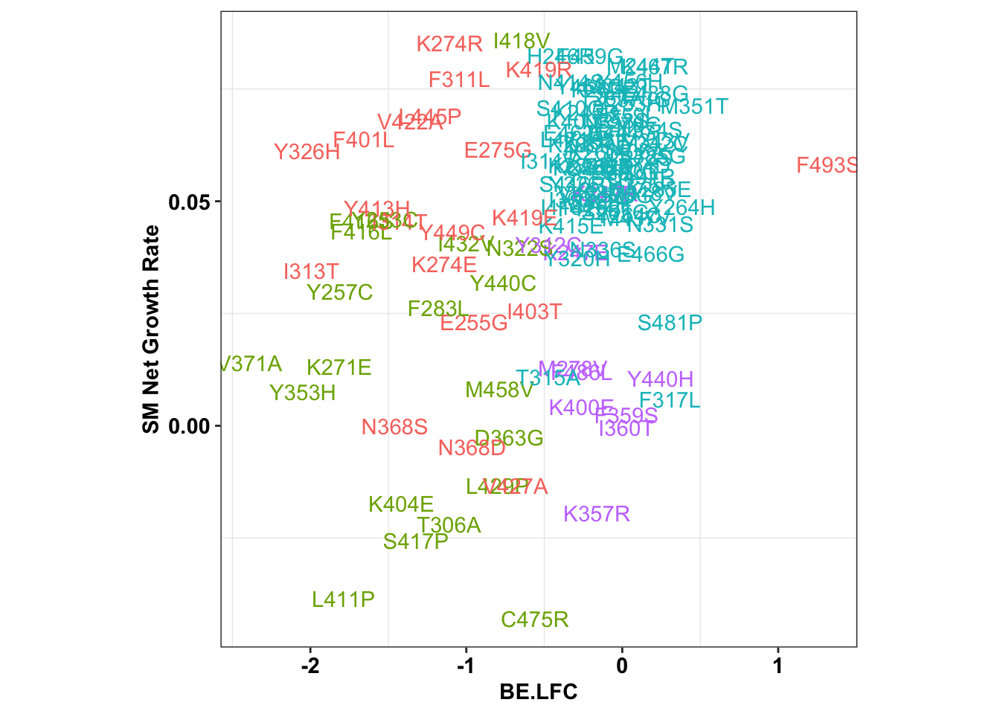
# ggsave("output/BE_SM_Plots/be_sm_abe_distancefiltered_labels.pdf",width=5,height=4,units = "in",useDingbats=F)
ggplot(x_sum,aes(x=BE.LFC,y=SM.netgr_obs_mean))+
geom_point(color="black",shape=21,size=2,aes(fill=significance_status))+
scale_y_continuous("SM Net Growth Rate")+
cleanup+
theme(legend.position="none",aspect.ratio = 1)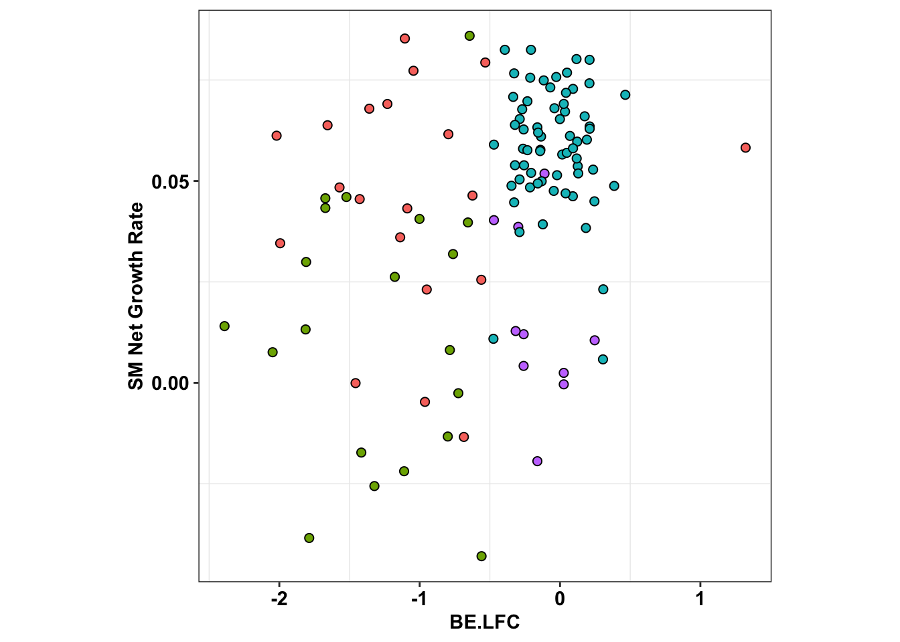
# ggsave("output/BE_SM_Plots/be_sm_abe_distancefiltered_point.pdf",width=5,height=4,units = "in",useDingbats=F)
# Amongst the ABE likely mutants, are there any defining features of the sgRNAs that agree with SM vs the sgRNAs that don't agree with SM?
# Answer: no difference in how many unique mutants an sgRNA is predicted to score amongst red and green
PAMs=bedata_inner%>%dplyr::select(sgRNA.Seq,PAM,Strand)
bedata_singlemutants=merge(bedata_singlemutants,PAMs,by = "sgRNA.Seq")
# bedata_singlemutants=merge(x_sum,PAMs,by = "sgRNA.Seq")
red_only=bedata_singlemutants%>%filter(distance_from_5%in%c(0,1,2,3),Type%in%"ABE",significance_status%in%"BEOnly")
red_only=merge(red_only,x_sum%>%dplyr::select(species,num_sgRNAs),by="species")
mean(red_only$num_sgRNAs)[1] 3.10177mean(red_only$mutants_per_sgRNA)Warning in mean.default(red_only$mutants_per_sgRNA): argument is not numeric or
logical: returning NA[1] NAgreen_only=bedata_singlemutants%>%filter(distance_from_5%in%c(0,1,2,3),Type%in%"ABE",significance_status%in%"Both")
green_only=merge(green_only,x_sum%>%dplyr::select(species,num_sgRNAs),by="species")
mean(green_only$mutants_per_sgRNA)Warning in mean.default(green_only$mutants_per_sgRNA): argument is not numeric
or logical: returning NA[1] NAmean(green_only$num_sgRNAs)[1] 2.363057blue_only=bedata_singlemutants%>%filter(distance_from_5%in%c(0,1,2,3),Type%in%"ABE",significance_status%in%"SMOnly")
blue_only=merge(blue_only,x_sum%>%dplyr::select(species,num_sgRNAs),by="species")
mean(blue_only$mutants_per_sgRNA)Warning in mean.default(blue_only$mutants_per_sgRNA): argument is not numeric or
logical: returning NA[1] NAmean(blue_only$num_sgRNAs)[1] 2.383562# What about the PAM? Are they made by different PAMs?
red_only_byPAM=red_only%>%group_by(PAM)%>%summarize(count=n())
green_only_byPAM=green_only%>%group_by(PAM)%>%summarize(count=n())
blue_only_byPAM=blue_only%>%group_by(PAM)%>%summarize(count=n())
# # bedata_filtered_forexport=bedata_inner_simple_filtered%>%select(-c(distance,))
# write.csv(bedata_inner_simple_filtered%>%select(-c(multi_mutant_sgRNA)),"data/BE_ABL_Merged/BE_SatMut_Screen_Kinase_Filtered_031823.csv")
# write.csv(bedata_inner_simple,"data/BE_ABL_Merged/BE_SatMut_Screen_Kinase_All_031823.csv")Making sure that Ivan’s base edited sample (that we deep sequenced) was not accidentally a twist sample (actually looks like there was an error in the variant caller and it was, in fact, a twist sample)
sessionInfo()R version 4.0.0 (2020-04-24)
Platform: x86_64-apple-darwin17.0 (64-bit)
Running under: macOS 10.16
Matrix products: default
BLAS: /Library/Frameworks/R.framework/Versions/4.0/Resources/lib/libRblas.dylib
LAPACK: /Library/Frameworks/R.framework/Versions/4.0/Resources/lib/libRlapack.dylib
locale:
[1] en_US.UTF-8/en_US.UTF-8/en_US.UTF-8/C/en_US.UTF-8/en_US.UTF-8
attached base packages:
[1] parallel stats graphics grDevices utils datasets methods
[8] base
other attached packages:
[1] ggpubr_0.4.0 cowplot_1.1.0 RColorBrewer_1.1-2 doParallel_1.0.15
[5] iterators_1.0.12 foreach_1.5.0 tictoc_1.0 plotly_4.9.2.1
[9] ggplot2_3.3.3 dplyr_1.0.6 stringr_1.4.0
loaded via a namespace (and not attached):
[1] httr_1.4.2 sass_0.4.1 tidyr_1.1.3 jsonlite_1.7.2
[5] viridisLite_0.3.0 carData_3.0-3 bslib_0.3.1 assertthat_0.2.1
[9] cellranger_1.1.0 yaml_2.2.1 pillar_1.6.1 backports_1.1.7
[13] glue_1.4.1 digest_0.6.25 promises_1.1.0 ggsignif_0.6.0
[17] colorspace_1.4-1 htmltools_0.5.2 httpuv_1.5.2 pkgconfig_2.0.3
[21] broom_0.7.6 haven_2.4.1 purrr_0.3.4 scales_1.1.1
[25] whisker_0.4 openxlsx_4.1.5 later_1.0.0 rio_0.5.16
[29] git2r_0.27.1 tibble_3.1.2 generics_0.0.2 farver_2.0.3
[33] car_3.0-7 ellipsis_0.3.2 withr_2.4.2 lazyeval_0.2.2
[37] magrittr_2.0.1 crayon_1.4.1 readxl_1.3.1 evaluate_0.14
[41] fs_1.4.1 fansi_0.4.1 rstatix_0.6.0 forcats_0.5.1
[45] foreign_0.8-78 tools_4.0.0 data.table_1.12.8 hms_1.1.0
[49] lifecycle_1.0.0 munsell_0.5.0 zip_2.0.4 compiler_4.0.0
[53] jquerylib_0.1.4 rlang_0.4.11 grid_4.0.0 htmlwidgets_1.5.1
[57] labeling_0.3 rmarkdown_2.14 gtable_0.3.0 codetools_0.2-16
[61] abind_1.4-5 DBI_1.1.0 curl_4.3 R6_2.4.1
[65] knitr_1.28 fastmap_1.1.0 utf8_1.1.4 workflowr_1.6.2
[69] rprojroot_1.3-2 stringi_1.7.5 Rcpp_1.0.4.6 vctrs_0.3.8
[73] tidyselect_1.1.0 xfun_0.31